原初的失乐园：《普罗玛西亚的咒缚》中的求死之神、负暗之人与拒绝同一的世界
“神之乐园不再，瓦纳迪尔由此诞生。”
——挣脱深海的吞没，在上方玫瑰色的晨光中呼吸
本文以大型多人在线角色扮演游戏《最终幻想XI》第二部资料片《普罗玛西亚的咒缚》（Chains of Promathia）为研究对象，围绕少女普利修的具身境遇与瓦纳迪尔创世神话，以“退回石头的冲动”为线索展开存在—本体论与深度心理学细读。不同于古典原罪论先有乐园而后失落的线性叙事，本作将黄昏男神求死、母水晶碎裂为五与凡人肉身容器分担黑暗铸为同一场创世事件。文章以弗洛伊德死亡驱力与谢林《自由论》幽暗“根据”为本体论双轴，借勒温拓扑场论结合瓦纳迪尔博物生态与水田直志原声声景，测绘从普罗米翁解离场、塔布纳基亚地下壕与帕拉达莫之丘荒原阻力，直至天上之海“自我溶解”深海的空间演进；并以拉康—克尔凯郭尔与温尼科特—荣格分别剖析主体僵局与关系转化，辅以列维纳斯他者伦理、比较宗教学及阿伦特复数伦理对照。借由胸中魔晶石、神歌《石之记忆》、戴纳密斯梦境反讽与飞艇及天象之锁的实机机制，本文论证普利修如何在吕费斯草地的沉默倾听与同伴无报复幸存中穿越基本幻想，在分离之痛里唤醒真自体，重返有限而有风的现世时间。
关键词：死亡驱力；幽暗根据；拓扑心理学；看护者假自体；石之记忆；宽恕与承诺；穿越基本幻想；分离之痛；炼金容器；最终幻想XI；普利修
This article examines Final Fantasy XI: Chains of Promathia (2004) through the embodied trajectory of Prishe and Vana’diel’s creation myth, tracing what it terms the "impulse to regress into stone." Departing from classical linear narratives of a lost paradise, the expansion stages the Twilight God’s longing for complete death, the shattering of the Mothercrystal, and the distribution of the Emptiness into mortal vessels as a single originary event. Anchored in Freud’s death drive and Schelling’s dark ontological "ground" (Grund), the study integrates Lewin’s topological psychology with Vana’diel’s natural-history ecology and Naoshi Mizuta’s spatial soundscape—mapping Promyvion’s ecological dissociation, Tavnazia’s sheltered rock cradle, the gravitational climb of Parradamo Tor, and Al’Taieu’s ego-dissolving sea—while pairing Kierkegaard and Lacan to diagnose structural impasse with Winnicott and Jung to trace relational repair, alongside Lévinas’s ethics of alterity, comparative religious readings, and Arendt’s ethics of plurality. Following the magicite in Prishe’s chest, the five verses of Memoro de la Ŝtono, the ironic mirror of Dynamis, and the ludonarrative asymmetries of the airship and Dawn encounters, the essay shows how Prishe traverses her fundamental fantasy before a silent, non-retaliatory companion atop Lufaise Meadows, reclaiming a somatic true self through the pain of separation (Schmerz) to re-enter finite mortal time.
Keywords: Death Drive; Ontological Ground (Grund); Topological Psychology; Caretaker False Self; Memoro de la Ŝtono; Forgiveness and Promise; Traversal of the Fantasy; Pain of Separation (Schmerz); Alchemical Vessel (vas); Final Fantasy XI; Prishe
材料、版本与理论架构说明
本文的研究范围严格限定于《最终幻想XI》第二部大型资料片《普罗玛西亚的咒缚》（2004 年实装，以下简称 CoP）的主线全篇及本体后日谈《解开咒缚之时》（含朱诺大理石桥三德之戒事件），不纳入日后跨资料片合流任务链的外部延伸，以守住 CoP 本体清冷苍茫的美学收束与哲学命题。
在材料核验与理论方法上，全文谨守三项原则：
- 版本边界与玩法机制区分：凡涉及探索与战斗规则的讨论，均明确区分资料片早期历史版本（2004 年上线至 2010 年 6 月 22 日官方解除等级上限更新 之前）与后期更新的差异，并严格区分“程序强制准入机制”（如等级封印、双锁石门）与“玩家开荒推荐策略”（如魂魄之器秘药、CCB 聚合物），以及“全版本必触发过场”与“单场实战或然互动”（如天象之锁战斗中复活倒下的普利修）。
- 双语文本见证：角色台词以可定位的日文玩家实机转录与 FFXIclopedia 保存的北美英语客户端转录为核对依据；正文力求保留汉语的呼吸与风声，不堆砌任务代码与冗长三语夹注，所有任务编号、英文对照与出处直链统一沉入文末注释与参考文献。
- 理论主轴与方法论边界：全文以弗洛伊德元心理学与谢林《自由论》为本体论双主轴，以拉康、温尼科特、荣格构成人物精神分析三重递进，以勒温拓扑场论结合瓦纳迪尔博物生态与水田直志原声声景贯通异质空间演进，并辅以列维纳斯他者伦理、阿伦特复数行动伦理及比较宗教学对照。在人物精神分析的学派分工上，本文以拉康（辅以克尔凯郭尔的存在焦虑谱系）诊断主体受困于矿石与基本幻想的结构性僵局，而以温尼科特与荣格阐释同伴抱持后的关系修复与躯体苏醒，两者分司“僵局诊断”与“关系转化”两段，不作无差别的学派混同。其中，拉康理论射程明确止步于 《第十一期研讨班》“穿越基本幻想”；凡援引 温尼科特《真自体与假自体中的自我扭曲》 中“看护者假自体自毁”概念，均严格界定为客体关系元心理学防御结构，绝非临床医学或现实风险诊断。
序章 退回石头的冲动
天象之锁的云海散去之后，神歌《石之记忆》在第五块母水晶的微光里低声落下最后一句判词：“神之乐园不再，瓦纳迪尔由此诞生。”（参见 《晓》日文剧本转录 与 Dawn 英文台词）
这句创世判词带着海雾般的冷意。在西方古典原罪论的线性时间里（如 奥古斯丁《上帝之城》第十三、十四卷），总是先有一座完好无瑕的乐园，尔后才因初人的违命招致驱逐、黑暗与必死的刑罚。瓦纳迪尔却从睁眼的第一刻起便拒绝了这种清白无垢的源头。凡人的大地不是乐园失落后的惩罚残片，它的诞生本身就是原初同一体的崩裂：黄昏男神普罗玛西亚厌倦了无尽的存续，渴求一场彻底的“完全之死”；黎明女神阿尔塔纳为了留住男神的性命，从单一的母水晶中强行夺取力量，令母水晶碎裂为五，并捏造出万千凡人的肉身“容器”，将男神体内涌动的“虚空之暗”分散封入每个活人的灵魂深处。凡人生来便不是被逐出乐园的罪人，而是替神明分担死亡重量、用必死之躯撑开世界裂隙的承重者。
黄昏中的神明何以始终执迷于回归死寂的同一？背负暗影与裂痕的有限凡人，又凭什么拒绝退回那种毫无痛苦的原初合一？要听懂这股贯穿全篇的沉重回响，不妨将它称作“退回石头的冲动”，并以弗洛伊德的驱力深渊与谢林的自由形而上学为灯，照进这座破碎世界的底层。
1920 年，弗洛伊德在 《超越快乐原则》 中凝视战争创伤与反复重演的梦魇，写下了一个近乎冷酷的判断：在维系个体联结、不断制造生命张力的“爱欲”（Eros）底层，有机生命内部始终潜伏着一股更古老的保守冲动——“死亡驱力”（Todestrieb）。它并非嗜血的破坏狂热，而是受苦生命在经受过量刺激、感到不堪重负时，渴望彻底卸除一切有机紧张、回复到无机物初始静止状态的向心引力——“一切生命的目标皆是死亡”，因为无生命物本就先于有生命物而存在。十年后，弗洛伊德在 《文明及其不满》 中把矛头转向宗教神秘主义所赞颂的“大洋感”（oceanic feeling）：那种消弭自我与世界边界、仿佛融化进宇宙怀抱的无差别一体感，不过是自我尚未经受现实原则切割前的原初退行。在第一章末尾，他借席勒《潜水者》的诗句，为有限的人间划下一道清晰分界——唯有挣脱深海的吞没、“得以在上方玫瑰色晨光中呼吸的人”，才真正驻足于人间。
弗洛伊德道出了受苦生灵何以渴望退回石头般的无机寂静，谢林在 1809 年 《对人类自由本质及相关对象的哲学探讨》（下称《自由论》）中，则接过了另一半追问：为什么单一完满的神之乐园必须碎裂？为什么凡人容器体内非得封存一团洗不净的“虚空之暗”？谢林指出，在浑然未分的原初“无底”（Ungrund）之中，既不存在独立的人格，也不存在真正的爱；任何有限存在物若要作为独立的个体而“实存”（Existenz），其内部都必须包涵一个区别于普遍光明秩序的收缩性幽暗基底——谢林称之为“根据”（Grund）。这层安居于生命底部的幽暗根据本身绝非邪恶；恰恰相反，正是它撑开了自我与他人之间不可被直接吞并的分离边界，使两个本可以各自独立、却又无法离开彼此的存在者得以跨越隔阂，成就最高的联结——“爱”（Liebe）。黄昏男神企图收回五块母水晶与万千容器中的虚空，说到底是要抹平谢林所说的个体“根据”，把分殊化的尘世重新拖回弗洛伊德所说的无机死寂。
在瓦纳迪尔的凡间大地上，这股宇宙尺度的回潮引力，最终凝结在一名少女的胸膛正中央——一块嵌在血肉里、既摘不掉也溶不开的“魔晶石”。
要掂量这块体内矿石的重量，不妨先回望卡尔·荣格在 《回忆、梦、思考》 中记下的两段童年藏石记忆。七至九岁时，荣格常常独自坐在花园斜坡的一块顽石上，在“究竟是我坐在石头上，还是我就是那块石头”的眩晕里，体会到一种脱离人间时间的永恒吸力；三十年后他重返故地，仍须猛力将自己从那块石头的静止引力中拽出来，以免丧失对成年生活与未来的把握。十岁那年，面对内心的分裂与日常挫败，他又把一枚涂黑的小木人和一块莱茵河畔捡来的光滑黑石锁进铅笔盒，偷偷藏在阁楼禁止踏足的屋顶横梁上——每当在人群中感到摇摇欲坠，只要想起阁楼横梁上那块妥善安放的黑石，分裂感便会悄然平复。
荣格终究是幸运的：他能把象征永恒静止的黑石锁在身外的阁楼木盒里，自己则继续在流逝的时间中长大成人。而在《普罗玛西亚的咒缚》里，少女普利修却没有身外的阁楼可藏。幼年大圣堂洗礼时，远古遗物“洗礼之箱”对她体内原有的“虚空”产生了剧烈感应，将其就地结晶为嵌在胸口的魔晶石。她的生理时间从此被冻结在孩童身形，耳畔却被迫向周遭众人的心声彻底洞开（参见 大公宫谒见厅密谈转录）。外部的人际防线被撕碎，内部的必死性出口却被一块不老不死的矿石死死堵住——二十年来，她眼睁睁看着身边的同龄人长大、衰老、凋零，自己却像一块被遗忘在人间时间之外的顽石。
日文原版《普罗玛西亚的咒缚》全部主线任务的标题，本就严格按日本古典《伊吕波歌》（“花虽芬芳终须散，吾世谁能常永存”）的四十七音依次排布（见 FF11 用语辞典任务全表）——这份埋在章节题名里的无常韵脚，恰与全篇拒绝永恒静止、接纳有限生灭的基调暗暗相合。一切并未从高悬云端的神殿讲起，而是始于旷野里那座突然发出低沉嗡鸣的破损石塔：当平日最熟稔的传送信标在脚下裂开孔洞，关于起源与归宿的真相，首先是以一次措手不及的坠落降临的。
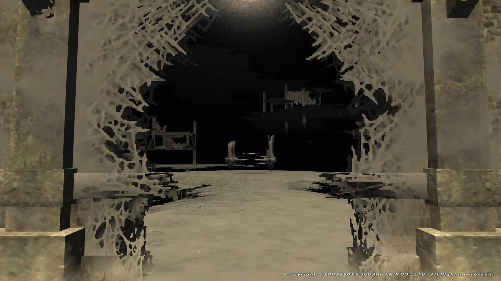
原初裂口 · 破损石门第一章 世界的孔洞与岩石摇篮
母晶裂口：当熟悉的坐标在脚下失效
《普罗玛西亚的咒缚》没有在开篇安排神殿长老宣讲创世教义，而是把通往太古危机的裂口，悄无声息地埋在了冒险者最熟稔的日常路标之下——拉泰讷高原的霍拉母岩、康施塔特高地的戴姆母岩、塔隆基大峡谷的梅亚母岩。平日里，这三座洁白石塔是白魔法师瞬息往返三大国的可靠锚点；直到某一天，西侧台座上的“破损传送石塔”开始发出异样的嗡鸣。冒险者踏入传送厅，脚下的石板骤然虚浮，整个人被抛入名为“普罗米翁”的灰白深渊（参见 Below the Arks 剧情转录 与 Promyvion 地图机制）。
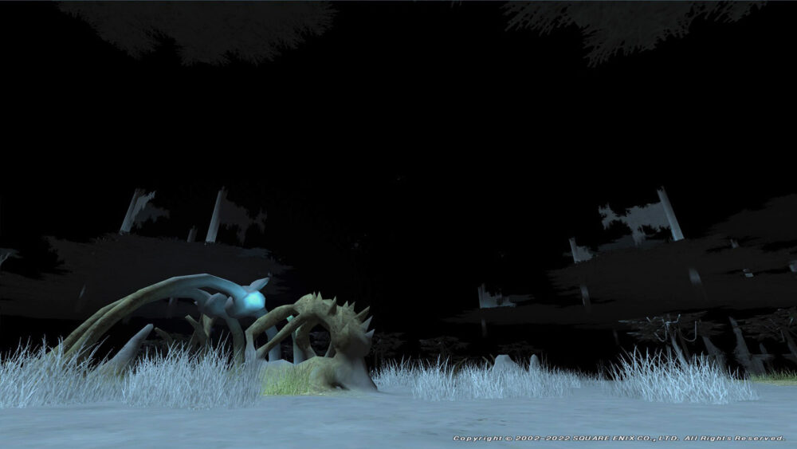
解离场 · 生态蒸发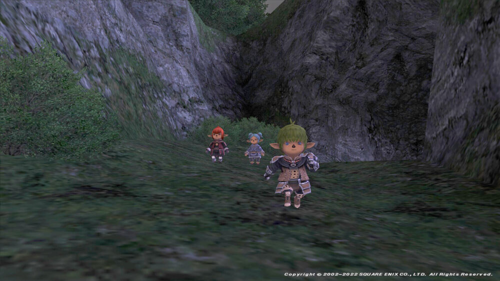
漩涡分途 · 溺水浮尸踏进普罗米翁的第一瞬，迎面撞上的不是流淌熔岩的魔域，而是一种令人心悸的知觉抽空。当空间中原本清晰的图形与背景分化彻底瓦解，视觉世界便退化为一片无差别的灰暗单色：这里没有昼夜交替，没有山川草木，甚至无法向任何城邦的地图商买到一张地图。水田直志谱写的区域配乐《褪色记忆——普罗米翁》（Faded Memories - Promyvion，见 CoP 官方原声带目录）亦以稀疏而单调的低频循环，在耳畔无声抽空了地面的重量。悬浮在虚空中的每一座平台都长得几乎一模一样，通往深处的道路被无形屏障封死；小队唯有在灰雾中搜寻并击碎苍白的“记忆之器”，才能借由迸发出的光流跃入下一层，或从游荡的“思考者”体内夺下记忆晶片，交回入口处的守望者以换取对路径的微弱感知。
在库尔特·勒温 《拓扑心理学原理》 中，空间从不是冰冷的几何测绘图，而是有机体与具体环境边界彼此咬合而成的“心理生活空间”。普罗米翁的反常，首先是一种反博物学的生态蒸发：这里没有土壤、昼夜与食物链，游荡其间的不是瓦纳迪尔的草木飞禽，而是剥去面孔的情绪动词。当母水晶内部维系现世张力的光明与幽暗被蔓延的“空虚”吞蚀，这片抽空了一切自然地貌与生态坐标的灰白空间，便沦为了一座外部保护层破裂、内部通路坍塌的创伤解离场。
也正是在这片名为“空虚”的深渊里，横亘着一道刺骨的悖论：为什么“空虚”之中到处塞满了“记忆”？细看游荡在平台上的空虚者谱系，答案便浮出灰雾——底层的漂泊者与流浪者，中层的哭泣者、沸腾者与思考者，直至尖塔深处的进食者、渴求者、繁衍者、强求者与沉思者。它们无一不是失去了面孔与姓名的动词化冲动，而倒下后散落的战利品，则是按情绪剥离出的残滓，以及 “痛楚之记忆”“罪业之记忆”与“恐惧之记忆”。
这里所谓的“记忆”，从来不是连贯温情的往事，而是弗洛伊德在《超越快乐原则》中所揭示的、冲决了心灵防刺激保护层（Reizschutz）后无法被主体吸纳的游离创伤能量。当过量的痛楚、罪业与恐惧无法被意识整合，它们就会在生活空间中分裂成自主盘踞的张力团块，如同不断吐出流浪者的记忆之器，靠强迫重复孵育着永不终结的梦魇。在 2010 年 6 月官方解除等级限制之前的漫长岁月里，三大母岩下的普罗米翁还横亘着一道冰冷的规则边界——强制 30 级上限。 踏入传送厅的瞬间，高阶冒险者多年积累的职业技能与精良装备尽数封印，身体被迫退回低等级的脆弱凡胎，甚至可能因阵亡扣减经验而在边缘触发等级跌落。这道迫使玩家切身体验“被锁入一具受限、易碎容器”的硬性规则，早已让冒险者在亲身受缚中预先尝到了普利修“身躯被魔晶石封死岁月”的窒息，也以极高的探索阻力剥除了大型多人在线游戏平日的等级阶序——没有高等级同伴的碾压庇护，六名被拉平为同级脆弱凡胎的陌生人只能在灰雾试错中彼此托举，结成患难与共的脆弱羁绊。
面对 30 级尖塔首领的凛冽高压，玩家将拾获的痛楚、罪业与恐惧记忆带回朱诺庭院，合成为封抑攻击或迫使目标退避的 “魂魄之器”秘药——这并非系统强制的准入条件，却把弗洛伊德所说的创伤能量“绑定”（Bindung）锻造成了具体的战术动作：唯有亲手把四处逸散的负面残片收束捆扎，小队才能在无主情结的围攻下站稳脚跟。
漩涡分途：溺水浮尸与神权追猎者
三座母岩的探索次序，同样遵循着回溯性的创伤语法。走完前两座普罗米翁时，冒险者吸入母水晶的微光，并在破碎的记忆投影里惊鸿一瞥——雪原上的古代遗迹，以及一名胸口异样发光的陌生少女。此时玩家尚未结识普利修，那道身影只是一枚悬在虚空里、无从破译的孤影。直至踏入第三座母晶的尖塔，空间边界彻底崩裂：追踪无名少年而至的古代吉拉特高层纳格莫拉达喝令就地处决玩家，无名少年释放黑暗触碰母晶，在“那曾碎为五块之物存在于每个活人灵魂之中，我们皆是容器”的低语里，失控的空间漩涡将玩家与纳格莫拉达一并卷走，跨越二十年前崩毁的大陆桥，狠狠抛向了远隔重洋的吕费斯草地（参见 The Mothercrystals 剧情转录）。
同一道母晶漩涡吐出的两名漂流者，在踏上塔布纳基亚土地的第一刻，便岔出了两条截然不同的路。
冒险者在海雾弥漫的草地上苏醒，手里既没有群岛地图，随身携带的古代护身符又当场被三个顽童抢走。为了追回信物，一无所有的异乡人只得向西摸索，跌跌撞撞闯进瀑布背后的岩石避难所——塔布纳基亚地下壕，并在踏入岩穴的瞬间被系统赐予了一个极其自嘲的称号：“溺水浮尸”（参见 PM 2-1 任务详情）。而在地下壕里，长老德斯帕谢尔很快提起“另一位以同样方式来到此地的人”：同样被漩涡抛上岸的纳格莫拉达，根本懒得看一眼掩体里困顿求生的流亡居民，直接穿过人群下往底层，径直逼近那扇通往福缪纳水道与大圣堂遗迹的禁忌铁门。反观顶着“溺水浮尸”称号的冒险者，却为了追寻三名孤儿的踪迹，在一层层跑腿、倾听居民苦衷的摩擦里，慢慢织进了这座流亡聚落的人间烟火。
岩石摇篮：三层岩穴里的屏障与天井
二十年前的水晶战争中，昔日繁华的塔布纳基亚侯国在兽人围攻与秘密武器暴发中化为焦土，幸存者顺着大圣堂地下运搬道逃入瀑布背后的岩山，凿出了这座三层防空壕（参见 FFXI 用语辞典：塔布纳基亚地下壕）。若按勒温心理生活空间的区域分化来细看，整座三层岩穴由上而下的垂直屏障，恰是流亡共同体集体心灵的岩石投影：
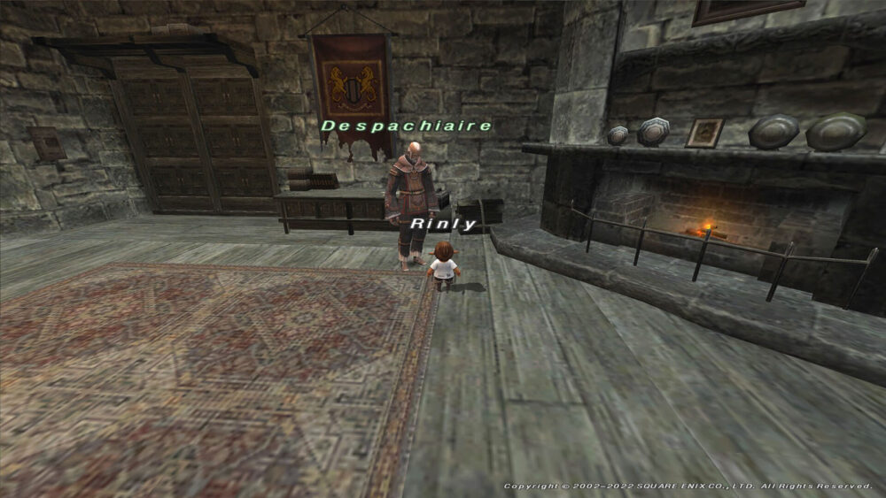
3F 阁楼 · 胡桃木门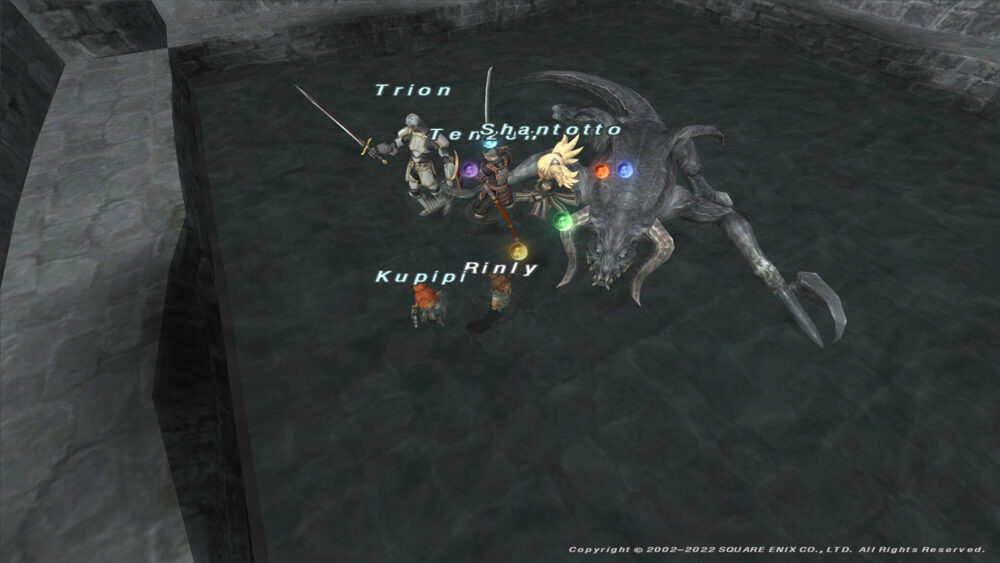
1F 地窖 · 福缪纳水道最上层的三楼（3F），是这座地底居所的“阁楼”。长老德斯帕谢尔与自警团长贾斯蒂尼乌斯在此驻守，而那扇紧闭的胡桃木门，更像一道高阻抗的隔离屏障，将二十年不曾老去的普利修严密反锁在流言与监视的深处——宛如序章中荣格藏匿黑石的阁楼横梁。最下层的一楼（1F），则是名副其实的“地窖中的地窖”：东北侧紧锁的下水道铁门后，封压着盘踞死难者怨灵福莫尔的 福缪纳水道 与半淹于海底的 沉没礼拜堂；南侧一端通向海狮巢窟栈桥，另一端则立着直通亡国噩梦的漆黑石碑。而夹在阁楼监视与地窖怨灵之间的中层（2F），却在厚重岩壁正中央向上凿开了一道露天天井，让吕费斯草地的海风、骤雨与天光直接泻进幽暗的岩穴。伴随天井光影回荡在石阶间的《被遗忘的都市——塔布纳基亚地下壕》（The Forgotten City - Tavnazian Safehold），以带着微凉雨雾感的木笛与温润弦乐，在听觉上为这座岩穴织出了一层克制却真实的庇护感。
正是这道向上敞开的天井，把塔布纳基亚地下壕与普罗米翁的死寂虚空截然隔开。初抵此地时，地下壕仍被二十年孤立的围城应激锁死：拍卖行与快递柜台彻底停摆，商铺品目凋零，唯独用于驱除不死族怨灵的白魔法卷轴“神圣放逐 III”定价低廉，无声泄露着整座掩体对底层亡灵反扑的深层戒惧——这正是亡国创痛无力完成哀悼工作、退回强迫戒备的被阻碍记忆。甚至在 2014 年 12 月更新前，玩家想在这片孤岛上获得“塔布纳基亚地下壕地图”、从而在勒温所谓路径空间中辨明方向，唯一途径竟是替中层居民攀上三楼胡桃木门旁石柱的背面，拾回遗落的 “纯白发卡”，并由此触碰幸存者之间二十年未能宽恕的亡国旧怨。抽象测绘的纸面地图在此并未向冒险者免费敞开，唯有以身体介入满载伤痛与记忆的实存空间、亲手触碰那桩悬在胡桃木门外尚未宽恕的往事，空间的迷雾方才缓缓退散。
及至第四章开篇《依代》重返地下壕之后，中层的拍卖行、快递与特产商铺方才渐次苏醒；而在福缪纳水道幽暗的地下图书室里，小队须循古籍残页点亮油灯移开暗门；在半淹于海底的沉没礼拜堂中，石墙随瓦纳迪尔的星期每日改道，在 2014 年增设单人神殿骑士钥匙替代方案 之前，内圣所的双锁石门更必须由两名同伴在同一秒钟各自转动海狮与珊瑚纹章钥匙方能推开。普罗米翁是抹除了一切坐标与温度的创伤解离场，而塔布纳基亚群岛的每一道铁门、油灯与双锁，都把二十年的历史沉重与同伴间的并肩响应铸进了可行走的土地。当封闭的防空掩体在通航与守望中软化了内部僵硬的隔离墙，这座有暗影压底、有天井迎风的三层岩穴，便在第四章题名“迷途之子的摇篮”中，真正转化为了容许迷途者喘息重整的抱持性居所。
第二章 胡桃木门后的忌讳之子
把污名抢过来戴在头上
推开地下壕三楼那扇胡桃木门，先前在母晶幻视里一闪而过的孤影，终于长出了滚烫的血肉与粗砺的声音（参见 《被遗忘的都市》日文实机记录）。
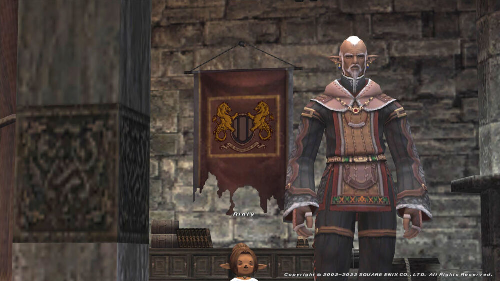
集体阴影 · 归罪风暴房门刚开，长老德斯帕谢尔随后踏入。在日文剧本里，这位外表停留在少女年纪的住客张口便以粗豪直率的“俺”（「俺」）自称，同长老古板威严的官腔针锋相对。她先是对长老罕见踏足自己的住处表示惊奇，旋即抢先一步接过那个悬在避难所上空的不祥烙印——“我是忌讳之子”（「俺は忌むべき子」）——反过来笑着问长老：和自己搭话，难道不怕招来女神的惩罚吗？
一个被共同体视作灾星的少女，为什么如此急切地把羞辱性的称号抢过来扣在自己头上？
唐纳德·温尼科特在《真自体与假自体中的自我扭曲》中剖析过一种极具韧性的防御结构：“看护者假自体”（Caretaker Self）。当外部环境持续施加无法消化的侵扰与敌意时，心灵为了保护内部尚未成熟、极度脆弱的“真自体”免遭撕碎，便会主动在表层锻造出一副高度警觉、强悍甚至带刺的反应性外壳，替内部核心拦下外界投来的一切目光与审判。在胡桃木门后，普利修正是这副“看护者假自体”最鲜活的化身：与其在周遭无休止的猜忌中沦为被动受审的弱者，她宁可先手夺过“忌讳之子”的污名，用粗豪的“俺”与浑不在意的玩笑将其化作贴身铠甲。然而，表层的粗豪面具越是嘻嘻哈哈、满不在乎，那个因时间冻结而无处吐露的孤寂核心，就越是被严密地反锁在胡桃木门后的暗室深处。
当集体阴影寻找一具身体
平日里尚可借玩笑挡回的暗流，待行至第四章、真龙之王巴哈姆特宣判人类末日而普利修又于沉没礼拜堂触碰男神像之后，终于在《纵遭谗谤》中骤然炸裂成了一场公开的归罪风暴（参见 Slanderous Utterings 英文转录）。
在这场对质中，德斯帕谢尔长老将三件横跨不同时间尺度的灾变强行拧成了一条定罪锁链：他先把普利修触碰忌讳之神神像视作罪证，继而断定巴哈姆特之所以降临塔布纳基亚，若解释为“因为普利修出生在塔布纳基亚”便完全说得通了；话锋一转，他甚至怀疑二十年前兽人大军覆灭侯国，莫非也是因为普利修才是“一切的元凶”。
卡尔·荣格在 《伊昂》第二章《阴影》 剖析“阴影”（Shadow）机制时曾写道：当个体或群体无力直面自身深重的无助与历史挫败时，无意识的阴影便会自动寻找外界带有异常标记的对象加以投射，直到把周遭世界变成自身恐惧面孔的复写本。德斯帕谢尔的归因跳跃，正是流亡共同体在灭顶恐慌中的典型阴影投射：面对难以承受的亡国创痛与迫在眉睫的龙灾，长老急于为无形的厄运安放一个看得见、触得着的名字，而普利修二十年不变的孩童身躯与旧日传闻，恰巧成了最现成的替罪靶心。这亦与勒内·吉拉尔在 《替罪羊》 中剖析的危机归罪机制如出一辙：每当共同体陷入难以承受的秩序危机，集体焦虑便会回溯性地锁定带有异常标记的边缘个体。
但塔布纳基亚地下壕终究没有滑向一致的迫害暴力。就在长老的控诉落下之际，他的孙女乌尔米娅当场挺身反驳：普利修是为了拯救塔布纳基亚才冒死奔走，她触碰神像却未被恶意支配，恰恰证明她怀有一颗澄澈良善之心；乌尔米娅同时抬出失踪的米尔德里翁枢机卿当年对普利修的护持，在替罪话语内部硬生生劈开了一道异议的裂口。而在随后的日常交谈里，地下壕居民们别别扭扭的道谢、盼她平安归来的挂念，乃至长老本人日后对自己“是否以恐惧将众人束缚在此地”的反躬自省，共同托住了这道摇摇欲坠的防线。
栈桥上的言说：在承认“不懂”中同行
归罪的风波尚未平息，自称代表桑多利亚大圣堂的红面具骑士鲁夫朗斯便顺势提出将普利修带往大圣堂接受“调查”，长老点头应允（参见 Sheltering Doubt 与 Slanderous Utterings）。在海狮巢窟阴凉的栈桥边，这场混合着保护与控制的移交，首先划出了一道冰冷的分界：极东武士典膳坦承自己曾替玩家请求一同登船却遭回绝，只得郑重许诺定会看护普利修；而原本被祖父严令禁止送行的乌尔米娅，却在起航前匆匆赶到了码头。
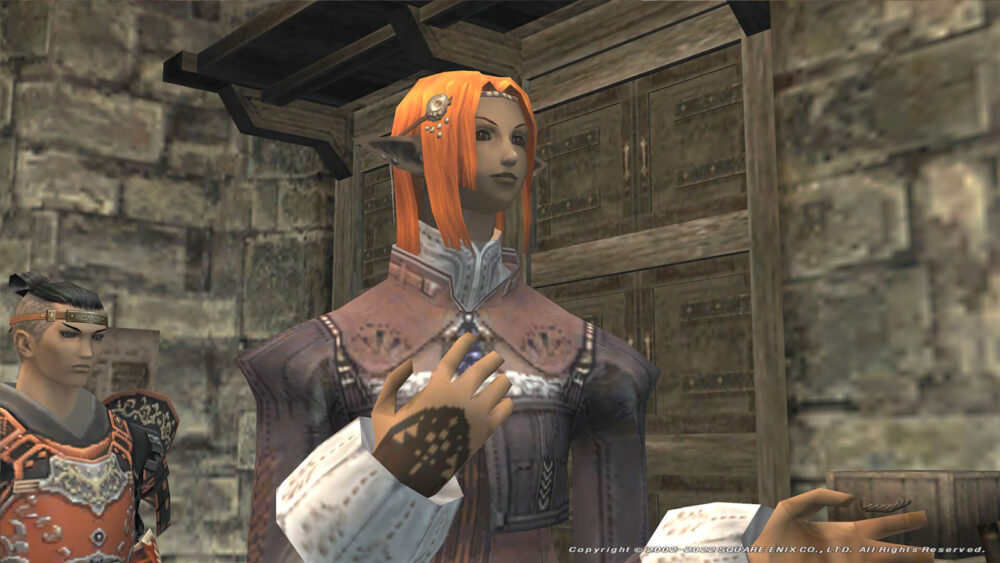
抱持 · 声音的距离这段栈桥道别，在“读心与言说”的张力里显得格外动人。普利修与乌尔米娅的羁绊，早在米萨雷奥海岸的旧日回忆里便已种下：年幼的乌尔米娅因过度紧张落选大圣堂圣歌队，独自在海岸边暗自神伤，是从大圣堂溜出来的普利修隔着数哩听见了她满腹苦闷的心声，告诉她即便进不了圣歌队，“能够让你歌唱的世界依然存在于瓦纳迪尔”，并拉着她迎着海风放声高歌。
而在海狮巢窟的栈桥上，两人的位置迎来了一次方向相反的呼应。尽管普利修拥有直接听见他人心声的能力，乌尔米娅却没有把“我完全看懂了你的内心”当作同行的筹码。她先以米尔德里翁所授、自大圣堂口耳相传的《石之记忆》（An Eternal Melody）作为线索争取到登船资格——这首神歌的第一、二节原本传唱太古诸神创世与吉拉特古都兴衰，乌尔米娅起初深信传唱它能替普利修洗刷“忌讳之子”的污名，直至后来在桑多利亚方才惊觉那原是一首终将招来神明的禁忌圣歌；此刻在栈桥边，她紧接着转向普利修，坦诚地说出了自己的局限：自己没有普利修那样的特殊能力，因此有许多事情并不懂得；但正因如此，她希望陪普利修一起出发，去唱那首属于普利修的歌——“是你把我带进了充满歌声的世界，这是我唯一报答你的方式。”（参见 Slanderous Utterings 英文转录）
这正是温尼科特所珍视的“抱持”（Holding）：不强行侵入普利修的内心，不假装全知，而是在坦率承认彼此不透明的前提下，稳稳站定在同伴身旁。也正是乌尔米娅这份“经由凡人发声、而非靠读心直通的歌唱”，第一次为“心灵之言”的暴力透明辟出了另一条声音之路——声音不必刺穿他人的边界，它可以在空气与海风的延迟距离里被彼此听见。普利修原以为她不会来送行，此刻眼底浮现出难以掩饰的欢喜，郑重向她道了谢。而在汉娜·阿伦特 《人的境况》 所言的公共行动里，乌尔米娅这一声公开的站队，也当场改写了权力的单向移交，让“唯独普利修被押走”变成了“两位少女结伴远行”。
飞艇的阴影掠过海狮巢窟幽暗的水面，而那块冷硬的矿石仍沉默地嵌在她的胸口，随海风起伏，等待着被重新叫出名字。
第三章 胸中的石头
洗礼之箱与无法摘下的矿石
在朱诺大公宫谒见厅的密谈中，普利修追忆起自己懂事以来的隐秘冲动：她一直觉得胸膛里有一股难以按捺的躁动，催促着她走进大圣堂、促使人们打开乐园之门。站在后来的风里回望，她明白那是体内“虚空”在暗中驱使。而在幼年的那场洗礼仪式上，大圣堂的远古遗物“洗礼之箱”对她体内的黑暗产生了剧烈感应，当场将其封入了一块魔晶石之中（参见 大公宫谒见厅密谈转录）。
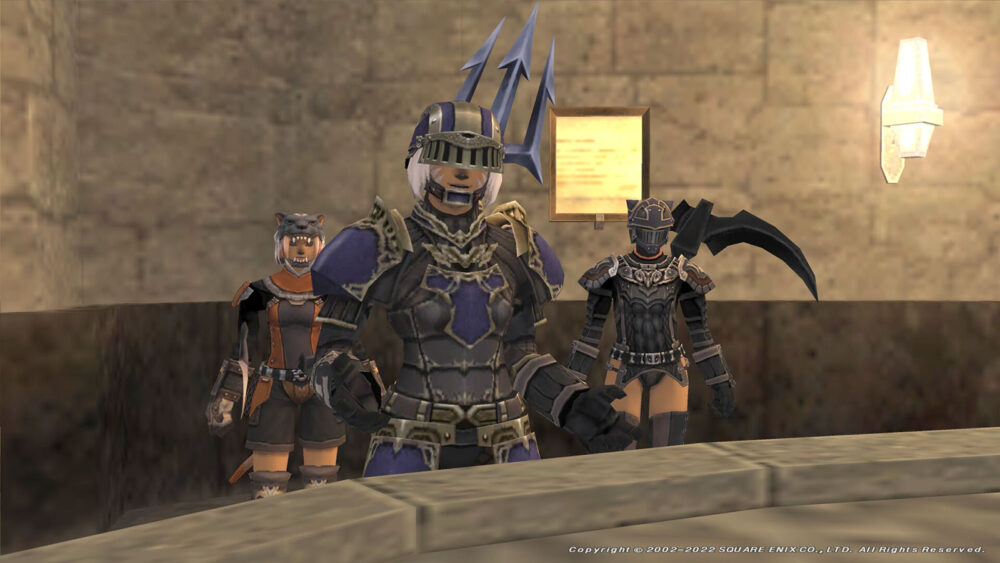
死记号凝视 · 罪人猎手这番追述在“外在器物”与“体内结晶”之间划出了清晰的界线。洗礼之箱（亦称“晓之瞳”）始终是一件独立于她身体之外的远古装置，在后续旅途中仍被各方势力反复争夺；而嵌在普利修胸口的魔晶石，则是她体内原有的黑暗在装置照射下就地凝结的血肉异物。在温达斯约兰·奥兰博士的宅邸里，当米斯拉罪人猎手希卡莉·Y 闯入威逼、以流血相胁喝令交出引发骚乱的“魔晶石”时，挺身而出的普利修在夏托托博士催促下毫不退缩地当众亮出嵌在血肉里的黑色矿石——这块石头就长在她身体里，绝非什么可以摘下来交差的赃物（参见 Where Messengers Gather 剧情转录）。也正因此，她胸口这块由洗礼之箱就地凝结的血肉矿石，在物理存在方式上不同于后来在乌勒格兰德雪原追回、曾令三十年前联军远征队陷入狂乱的旧都魔晶石“塔布纳基亚之星”（Star of Tavnazia）——后者可以失窃、流转、被夺回，而前者早已与她的心跳长在了一处。
日文原剧本与北美英语剧本在命名这套身体处境时，悄然折射出两重冷暖迥异的语感：日文调用了浓厚的本土器物凭依词汇——将体内的暗影称为“虚空”（「虚ろ」），将承接外力的载体称为“依代”（「よりしろ」），将读心感应称为“心灵之言”（「心の言葉」）；北美英语版则将其重铸为冷峻的末世神学语汇——将“忌讳之子”译作“可憎者”（“the abhorrent one”），将“虚空”译作“空虚”（“the Emptiness”），甚至借纳格莫拉达之口称她胸口的矿石为“封住玷污这具脆弱容器之虚空的水晶”。一边是中空肉身沦为神力凭依的器物感，一边是受玷污容器背负末世审判的宿命重压。
当匮乏本身缺失之时
那场把体内黑暗就地封死的洗礼，将普利修抛进了时间形态、生死边界与人际界膜三重错位的深渊。
一道裂痕向外敞开，另一道则向内锁死。温尼科特指出，健康的个体在身心外围拥有一层区分“自我”与“非我”的“界限膜”（limiting membrane），它如同弗洛伊德所说的防刺激保护层，替主体的私密内心挡下外界过量的侵扰。然而，洗礼之箱却把普利修的防御彻底颠倒了：伴随结晶而来的“心灵之言”粗暴撕开了她面向他人的界限膜，使周遭众人的恐惧、猜忌与苦闷无需经过语言中介便直接刺进她的感知；唯有撞上紧闭心扉的武士典膳时，这股被迫敞开的透明感才会碰壁（参见 《锁与绊》日文转录）。
比外部界膜撕裂更令人窒息的，是内部有限性出口的彻底堵塞。正如索伦·克尔凯郭尔在《致死的疾病》中所描绘的存在论折磨，二十年流亡岁月里，塔布纳基亚的同龄人一个接一个长大、婚嫁、衰老、死去，唯有普利修胸口那块冰冷的魔晶石，以静态的不老不死堵死了她作为凡人自然向死生成的出口——最深的痛苦绝非单纯的肉身死亡，而是“求死而不得死”、永远无法摆脱这具停滞肉身的绝望。顺着克尔凯郭尔这条存在焦虑的脉络再往深处看，雅克·拉康 1962–1963 年 《第十期研讨班：焦虑》（Polity Press 2014 年英译本）道破了焦虑的结构真相：焦虑并非空洞的心理惊慌，而是“唯一不说谎的情感”与 “实在界的信号”；它恰恰爆发于“当匮乏本身缺失之时”（quand le manque vient à manquer）——即当原本容许主体在有限时间与分离距离中喘息的裂口，被某个甩不掉的实存异物死死堵住之时。外部人际防线洞开，内部必死裂口封死，这种双重挤压使她长期浸泡在无处可逃的深层焦虑与温尼科特所说的“不真实感与徒劳感”之中。
黑暗的对象化与活体容器
为什么当太古文明试图把生灵体内的“黑暗”视作可以抽离、封存、清洗的客观物质时，反而亲手招致了灭世灾厄？
沿着普索·贾第四母水晶与古都夕照之间的历史线索向上回溯，太古吉拉特人曾围绕“黑暗”推行过一场彻底的对象化工程（参见 《古代之园》日文转录 与 Garden of Antiquity 英文转录）。当一部分吉拉特人因体内的“虚空”遮蔽了光明、失去直接读心的“心灵之言”而沦为“库鲁乌人”时，吉拉特王下令铸造被称为“共感之证”的护身符，企图封抑他们体内的暗影、强行敞开其心扉，使佩戴者的一切念头尽数暴露在王权的监视之下。更激进的实验则落在名为“虚空之器”（夕照之间）的远古设施里：太古人源源不断地从库鲁乌人身上抽取黑暗，并将其高浓度汇聚进一间密闭容器之中；结果，脱离了个体肉身约束的黑暗骤然膨胀，化作唤醒男神之器的灭世温床，迫使神代守护者伊芙诺伊尔与塞尔·提乌斯付出惨痛代价，塞尔·提乌斯本人更曾一度死去，借由凤凰之火方才复生。
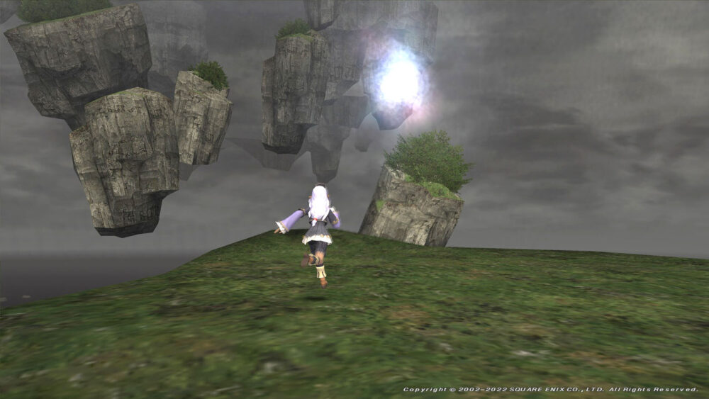
利维内 · 活体容器将这组太古器物与普利修并置，瓦纳迪尔诸般“容器”的宿命便一览无余。吉拉特王的窥心护身符与洗礼之箱，妄图以全知大他者的姿态剥夺他人的内心隐秘，把谢林所说的个体幽暗“根据”冻结成石——在伊曼纽尔·列维纳斯 《总体与无限》 看来，这种企图将不可化约的他者彻底透明化、强行收编为可被掌控之“同一”（le Même）的冲动，本身正是总体性暴力的根源；夕照之间的虚空之器则走向另一个极端，试图将人类体内的暗影彻底抽干，反倒把个体赖以独立的边界溶解成了吞噬世界的黑洞。至于神代守护者塞尔·提乌斯与伊芙诺伊尔，他们虽以身殉道，却长期滞留于远离凡间烟火的母晶与天界领域。
唯独身处现世风暴中心的普利修，既不是冰冷的机械器皿，也不是高踞云端的守门人。她是卡尔·荣格在《心理学与炼金术》中所描绘的活体炼金容器（vas）。荣格指出，炼金术的蒸馏容器之所以能令原初混沌物质经历升华，关键在于容器必须同时具备两重品质：一是坚韧的容纳力，不因内部冲突的沸腾而崩裂，也不将阴影随意倾泻给外界；二是持续的文火煎熬，使盲目破坏的原始冲动在受控的张力中完成转化。
这种容纳力并非空泛的比喻，而是刻在普利修一次次以血肉迎击的险途里的——从福缪纳水道深处直面纳格莫拉达的轻蔑羞辱、沉没礼拜堂重返幼年受洗的地下圣所，到约兰宅邸当众亮出嵌在皮肉里的矿石直面希卡莉·Y 的威逼，她始终用自己的胸膛替同伴与世界承接着那块无法摘除的矿石。而在崩裂悬浮于云海之上的利维内岩石群，两度直面真龙之王巴哈姆特的险途则劈出了全剧最冷酷的身体镜像：早在站点 A01（Ancient Vows），冒险者便与普利修、乌尔米娅携巨龙鳞片穿越浮空裂谷，亲眼见证巴哈姆特唤出纳格莫拉达“库鲁乌人同伴”的身份；及至第四章站点 B01（The Savage），在普利修缺席的情况下，乌尔米娅、极东武士典膳、贾斯蒂尼乌斯与冒险者再度登临帝龙降临之地，听见凤凰唱响《石之记忆》第三节并直面巴哈姆特宣判人类末日。也正是从站点 A01 那声“库鲁乌人同伴”开始，两人南辕北辙的身世宿命彻底分明：普利修是被洗礼之箱强行撕开界膜、被迫承受“心灵之言”却渴望重归不透明的凡人；纳格莫拉达则是因体内虚空而丧失“心灵之言”、却疯狂企图靠洗净黑暗与夺取全知来重归神性的流亡者。
放到荣格 《心理类型》 关于“死记号”（Zeichen）与“活象征”（lebendiges Symbol）的区分下端详，魔晶石在不同目光下的命运便立时分明。记号只是既定概念的僵硬标签，而活的象征则是对充满内在矛盾之心灵实在的当下表达，只要主体拒绝将其简化为单面标签，它便保有促成心理转化的活性。在长老、希卡莉·Y 与纳格莫拉达眼中，普利修胸口的魔晶石只是一枚单义的“死记号”——要么是亡国灾星的罪证，要么是可索取的赃物，要么是开启神门的钥匙零件；唯独在普利修自己滚烫的人间羁绊中，它始终保持为一枚撕裂却活着的象征：既是锁死岁月的咒缚，又是护卫同伴的支点。
即便读心能力偶尔撞上沉默的高墙，这具活体容器依然在学习触碰真实的他者。当众人在云端死里逃生、典膳因凤凰之力耗竭而独自离去时，普利修对着玩家坦承自己非常担心典膳，却因为“典膳关闭了内心”（「心を閉ざしている」），完全不知道他此刻在想些什么。温尼科特曾严格区分处于主体全能掌控之下的“主观客体”与超出全能感知之外的“真实外在客体”——真正的他者天然抗拒主体的全能认知占有。读心能力在典膳面前的失效，非但没有熄灭普利修的牵挂，反而让她第一次在“看穿不了对方”的不透明距离里，真切地把一位独立同伴放在了心上。
当真龙的阴影压境、世人开始在“拯救世界”与“献出一人”之间权衡筹码时，那枚封在活体容器里的石头便在静默中悄然发烫。
第四章 被选择的死与凤凰之火
冰河废墟、无伤幻象与三岔路
沿着主大陆与极北冰河的线索一路追索，冒险者最终踏入了第四座母晶深渊——位于毕塞迪恩冰河之巅的普罗米翁-瓦兹尔（参见 《无名同伴们》日文转录 与 日文实机记录）。
与第一章三座母岩将人“向西抛入”塔布纳基亚不同，瓦兹尔将一路同行的伙伴们“向内吸入”了太古创伤的深层褶皱：踏入迷宫的瞬间，普利修、乌尔米娅与鲁夫朗斯尽数被虚空吞没，玩家必须在冰冷灰暗的第三、四、五层逐一寻获记忆之流汇、击溃涌出的繁衍者、强求者与沉思者，方能把受困于独立创伤区域中的同伴逐个唤醒。弗洛伊德曾在《文明及其不满》中把人类心灵比作一座层层叠压的“心灵罗马城”——一切过往废墟一旦形成便不会湮灭，而是深埋在地基之下随时回潮。瓦兹尔的逐层唤醒，正是深入集体无意识地基的一次创伤绑定。
就在众人刚从虚空褶皱里喘过气来，梦境神兽迪亚波罗斯在尖塔尽头现身，抛出了全剧最具蛊惑力的一套取消主义控诉：凡人终究逃不出黄昏男神的召回意志，当年塞尔·提乌斯企图同时挽救世界与人类，结果不过是令世界与人类双方都落下了累累伤痕。迪亚波罗斯以此诱导众人放弃粗糙痛苦的现世抗争，撤入由他掌管的梦境世界“戴纳密斯”。
这场冰峰辩难，实为弗洛伊德“现实原则下的爱欲投注”与“退行性幻觉麻醉”的正面交锋。弗洛伊德在《文明及其不满》第二章指出，人类之所以在现实世界里倍感痛苦，根源正在于我们将爱欲投注给了真实的他者——一旦去爱、去挽救身旁活生生的同伴，主体便撤除了自恋硬壳，将自己彻底暴露在“因所爱之人受伤或失落而承受撕裂之痛”的风险之中；而为了免除这份痛楚，最彻底的逃避便是切断与现实的联系、退入无痛的梦境麻醉，其代价则是生命活力的干涸。
更具冷峻反讽意味的是，迪亚波罗斯所许诺的“戴纳密斯”在实机与设定里从来不是一座无痛的避风港：旧四国的梦境早已被水晶战争的阴影领主与亡灵军团侵占；而在 CoP 3-5 解锁的“梦境戴纳密斯”（尤其是 2006 年实装的“戴纳密斯—塔布纳基亚”）中，迪亚波罗斯本人甚至不得不承认，接触过“虚空”之人的梦境反过来将他的梦乡撕成了反复复燃的噩梦（参见 Dynamis 剧情转录）。逃离现世并不能免除伤痛，只会把无法消化的创伤锁进没有白昼的强迫重复。
普利修当场的回击干脆利落，直接撕破了迪亚波罗斯“免于受伤”的幻象：即便留下了伤，塞尔·提乌斯当年依然救下了世界与人类双方；这世上根本不存在既不伤人、自己也不受伤的活法，如果因为害怕受伤就退缩，那就谁也救不了。将“可受伤性”确立为凡人互救的前提，正是温尼科特所说的对“活着之真实感”的捍卫。
然而，迪亚波罗斯紧接着施展了一次极其险恶的修辞偷换。他顺着普利修“不惧受伤”的话锋逼问道：既然如此，那就由你一个人来背负人类的伤痛并死去，以此解除当年塞尔·提乌斯与真龙之王巴哈姆特缔结的古老契约。迪亚波罗斯把她所捍卫的“复数同伴在共生中分担创伤”，偷换成了“指定单一特殊身体赴死以一次性清偿真龙契约”。虽然普利修当场敏锐地反问古老契约竟然可以被打破，但“由你一人赴死以解约”这枚危险的能指，已经悄然扣动了她体内潜伏已久的另一道机关。
而在踏出冰河、迈向朱诺大公宫之前，冒险者更在主大陆经历了分道扬镳又彼此呼应的 “三岔路”（Three Paths）——鲁夫朗斯查访塔布纳基亚旧都与古都阿尔·塔伊尤的过往罪业，乌尔米娅自桑多利亚、温达斯一路追寻冰河失踪的普利修并途经阿托瓦地沟与乌勒格兰德雪原，来自极东“东国”（ひんがしの国）的武士典膳则背负家乡面临虚空侵蚀的焦虑，奔赴拉泰讷高原等地寻求红宝石兽卡邦库尔的指引。正是在这三条互不统属却同向而行的尘世路径里，凡人对抗宿命的复数网络已经悄然织就。
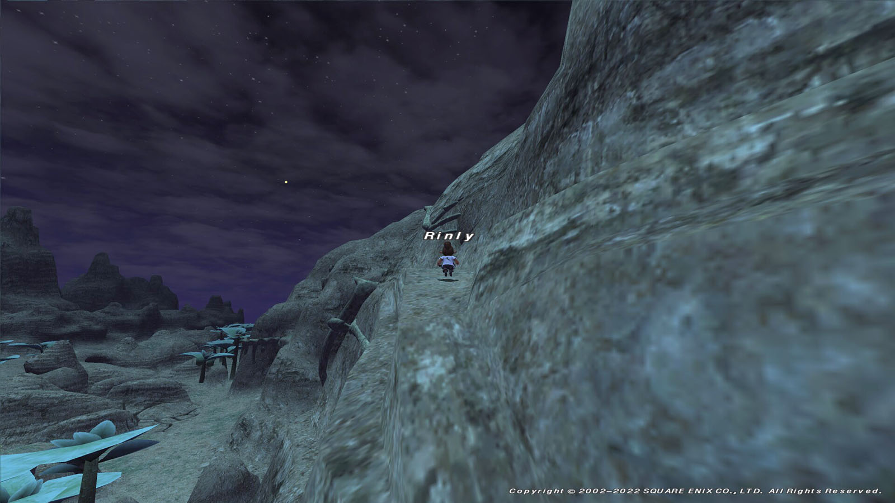
高阻力路径 · 帕拉达莫之丘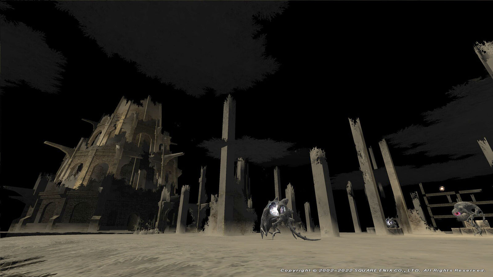
普罗米翁-瓦兹尔 · 心灵罗马城若顺着乌尔米娅途经阿托瓦地沟的足迹略作回望，这片位于阿拉戈纽东部、唯有穿越地下夏克拉米迷宫方能抵达的裂谷，本身就是瓦纳迪尔极富粗砺生命力的荒原博物志——阿托瓦（Attohwa）在古米斯拉语中意为“干旱”，干裂大地间歇喷吐毒瘴，沙地里却潜伏着掘穴蚁狮，谷间生长着喷毒的毒瘴花，东侧耸立着由巨兽遗骨与风化窄脊构成的 帕拉达莫之丘（Parradamo Tor）。
冒险者早在 PM 3-3《两条路》（The Road Forks） 的温达斯寻镜途中，便已在这座荒原骨山上切身经历过勒温所谓“高阻力路径空间”（hodological space）的极致考验：怀揣仅限地球时间 30 分钟、切图或骑乘坐骑即刻碎裂的“记忆之宝玉”（Mimeo Jewel），玩家只能在无法跳跃的螺旋窄脊与巨兽骸骨桥间徒步贴壁缓行，耐心等待间歇喷发的瘴气柱消退，甚至在数处断崖刻意“向下方窄台缓缓跌落”方能接续上行，一失足滑落山脚便须重头来过；及至抵达山顶名为“再生之摇篮”（Cradle of Rebirth）的地脉裂隙，易碎的宝玉才在古老地力中蜕化为三根轻盈的“记忆之羽”（Mimeo Feather），修补起那面即将唤回失传神歌的“记忆之镜”。抽象的纸面地图在此几乎彻底失灵，玩家唯有靠贴壁缓行与计算落差的具身实践，方能把荒原峭壁走成一条活生生的路径；这一趟伴随重力、倒计时与失足风险的攀登，既以“由石蜕羽”的微缩炼金呼应着“胸中矿石消溶”的暗线，更把凡人在时间与阻力中步步前行的真实位移（locomotion）刻进了玩家的掌心。
索求第五首歌：爱欲与死驱力的隐秘妥协
及至众人重聚朱诺大公宫谒见厅，揭晓太古真名的艾珊塔尔以第五节神歌失传为由，决定率朱诺舰队独力迎击真龙，并下令派飞空艇送普利修与乌尔米娅返回塔布纳基亚（参见 More Questions Than Answers 剧情转录）。外在强加的献祭命令至此已经解除，挚友乌尔米娅也在一旁极力劝阻，可被免除了赴死义务的普利修非但没有松一口气，反而表现出激烈的抗拒。她当场喊话同伴，称大家如今已有力量在自己化作黄昏男神时将自己击败，执意催促众人前往塞尔比纳寻回失传的第五首歌。
为什么当生门已经为她敞开，她却偏要一步步把自己推回“唯一可死之人”的风暴眼？
早在阿托瓦地沟的骨冢深谷直面三名罪人猎手时，普利修便曾拒绝替任何人背负强加的罪名，却脱口道出过一句暴露心底暗流的话——她愿意为自己的罪偿债，“因为我的罪过在于放弃了自己”（“Because my crime was abandoning myself.”，参见 Where Messengers Gather 英文转录）。弗洛伊德在 1924 年 《受虐狂的经济问题》 与 1926 年 《抑制、症状与焦虑》 中剖析过驱力的交织：朝向无机静止的“死亡驱力”与维系同伴联结的“爱欲”在现实心灵中极少孤立运作。在普利修的意识里，她对乌尔米娅与塔布纳基亚居民的守护之爱炽热而真挚，这决定了她绝不可能为了个人解脱而协助男神毁灭世界；然而，当大公宫浮现出“必须有人直面真龙与男神以挽救众生”的绝境时，“为拯救同伴与世界而由我一人舍身赴死”这一崇高的利他律令，恰恰成了她的爱欲（护住同伴）与被压抑的死亡驱力（合法结束自身不死孤寂）唯一能够重合的妥协出口。一旦艾珊塔尔关闭了这条祭坛之路、要将她送回后方继续“永远看着身边人老去”的无尽岁月，这股好不容易找到体面名义的求死暗流便骤然无处安放。
顺着这条裂隙再往下探，温尼科特在剖析“看护者假自体”的命运时，曾写下过一段冷峻的判词：假自体的首要职责是寻找能使真自体安全存活的现实条件；然而，倘若始终找不到这样的条件，为了防止内部的真自体遭到外力的剥削与湮灭，假自体就会被迫组织起一场极端防御性的“自毁”——即为了避免真自体遭到湮灭而对整体自我的毁灭（此处严格指温尼科特客体关系元心理学中的防御结构，详见文末注释 4 ）。只要胸口的魔晶石仍在冻结她的生命、令她看不到作为有限凡人真实活下去的可能，她的看护者假自体便会借“舍身救世”之名，为自己组织起这场结构性防御自毁式的英雄退场。而米萨雷奥海岸上那滴连她自己都未曾察觉的眼泪，正是在乌尔米娅拒绝松手的痛哭抱持面前，被锁在坚硬假自体铠甲下的脆弱真自体第一次无意识的渗漏。
飞艇甲板上的凤凰之火与未消的心伤
真正劈开这套“生死驱力妥协”、将普利修从英雄式自毁的悬崖边拽回人间的转折点，落在高空飞艇甲板那场惊心动魄的云端激战（参见 《锁与绊》日文转录）。
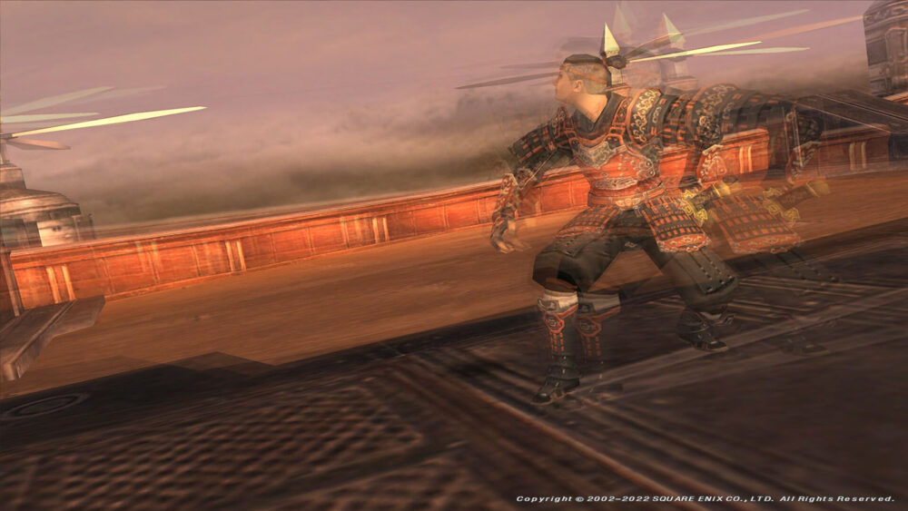
飞艇甲板 · 凤凰之火从海狮巢窟乘席德飞空艇升空、登临朱诺阿尔马塔机关战舰的摇晃甲板上，携洗礼之箱现身的纳格莫拉达企图再度以远古器物压制普利修与塞尔·提乌斯。而在 2010 年解除等级限制前，这场被强制锁定在 60 级上限、限时 45 分钟的高空拦截战 “飞艇甲板三段连战”（One to be Feared），要求六人小队在同一块摇晃的云端甲板上连续迎战三组人造兵器——五台形态切换的马默特-22、高速带晕眩的奥米茄与低血量狂暴反物质炮的乌尔提玛（玩家开荒时常备的“CCB 聚合物”封技道具属推荐战术而非强制准入条件），每段间隙必须由玩家亲手推开船舱铁门迎向下一艘战舰。在无从依赖高等级代打的早期版本里，这 45 分钟强制清空 TP 的三段连环苦战，把凡人脱离阶序后的同舟共济推至顶点：唯有六名同级同伴在灭团边缘反复校准节奏、彼此补位，才能共同撑过云端高压。正是在这场凡人协作的极限苦战之后，盘旋于云端的真龙之王巴哈姆特降下旨在抹除全员的毁灭吐息“百万核爆”时，站出来的不是独自走向祭坛的普利修，而是极东武士典膳——他毅然拔刀，倾尽寄宿于神刀中的凤凰神力正面撼住了真龙吐息，把全员从必死之局里硬生生拽回了人间。
劫后重返塔布纳基亚地下壕时，普利修向玩家追述了甲板上的那一瞬。她坦承，自己此前确实一直以为“只要能救下世界与大家，哪怕舍弃性命也无妨”；但在亲历同伴拼死护卫夺回生机的这一战后，她真切地领悟到——一条“自己不死而拯救世界”的艰难道路，是确确实实存在于这世上的。她庆幸玩家平安归来，并叮嘱玩家今后无论遭遇何种险阻，都要继续活着战斗下去。
温尼科特曾指出，唯有当外部人际环境真正提供了可靠、不剥削的“抱持”，使主体确信自身不必靠自我毁灭来捍卫尊严时，看护者假自体才会解除极端防御动员。飞艇甲板上，典膳耗尽凤凰神力、冒险者与乌尔米娅并肩死战，以血肉行动向普利修证明：同伴们绝不接受拿她的死去抵账。这股坚实的共同体羁绊（絆），当场拆穿了迪亚波罗斯所设的宿命锁链（鎖：“救世＝终结者一人赴死”），也一举劈碎了“献出一人以息神怒”的古老祭坛，更迫使普利修体内的生死驱力彻底解绑：爱欲从此稳稳归属于“与同伴一道活着救世”，而那股“渴望自身迎来终点”的求死暗流，则彻底失去了崇高的英雄外衣。
只是，地下壕的劫后重逢并没有把这条不靠献祭的生路美化成毫发无损的奇迹。就在同一场重聚中，生活在莫布林群体里的加尔卡族人贾博斯留下了一句极其沉重的判词：身体的伤比较容易医治，可心里的伤却很难消退。拒绝用一具尸体一次性结清账目，意味着活下来的人必须在残缺与亏损中共同分担重量：典膳因神刀中的凤凰之力彻底耗竭，怀着无力再战的自责紧闭心扉独自离去；普利修与乌尔米娅在读心失效的隔阂中忍受着牵挂的煎熬。甚至在乘席德飞空艇奔赴舒梅约海红光的途中，受凤凰临终托付的典膳一度联手切布基三兄妹劫持船只、与冒险者刀剑相向，直至在败北中亲手放下孤身担责的执念，方才随众人一同坠入那道吞没飞空艇的赤色光柱。带着这份“公共献祭已被证伪、私人终结愿望却赤裸浮现”的剧烈张力，一行人终于被赤色光柱卷入云海之上的纯白神域。
第五章 门前召唤与苍白深海
天上之海：边界溶解的洁白监牢
被舒梅约海冲天而起的赤色光柱吞没之后，展现在同行者眼前的纯白古都阿尔·塔伊尤，并没有呈现出传说中神之乐园的祥和温煦。在视觉景观、生态命名与玩家共同体的通称中，这座悬浮于云海之上的太古之城，被直截了当地称作一片“天上之海”（参见 《古代之园》实机记录）。水田直志的《天上之都——阿尔·塔伊尤》（The Celestial Capital - Al'Taieu）以近乎无重力的空灵电子混响铺满整片云海，预先在声场里消融了陆地行走的节拍。
将弗洛伊德《文明及其不满》对“大洋感”的批判，与库尔特·勒温《拓扑心理学原理》关于心理生活空间在极端“流态化”（fluidity）下发生“内部边界溶解与彻底去分化”（dedifferentiation）的场论放在一起看，这片洁白深海的诡谲本质便清晰起来。有限生命的活力，仰赖于自我与外部世界、人格内部各区域之间维持着清晰而富于弹性的边界，从而保存有意义的张力差；与阿托瓦地沟帕拉达莫之丘步步受重力、倒计时与瘴气牵制的窄脊截然相反，一旦所有内部边界在流体般的无阻空间中消融殆尽，张力便会瞬间均等化而归零，退回尚未经受现实切割的原初死寂。
阿尔·塔伊尤正是这场“大洋感与极端流态去分化”在云海异域里凝成的诡谲景象。当太古都城脱离凡间大陆的土壤与重力、被封入云海深处，陆生世界的硬壳与骨骼架构彻底消失，整座古都漂浮在无边无际的苍白水波与珊瑚状结晶之间，演化出一整套无骨骼、半透明的深海胶质腔肠拟态生态——蝠鲼状的普阿博、枪乌贼状的克佐米特、游鱼状的赫佩姆德、海葵状的欧维与巨型水母状的约夫拉。更隐秘的是，这片白海在博物分类与实机规则上正一步步溶解着凡人的“自我边界”：不同于瓦纳迪尔陆生生态系仰赖捕食者与被捕食者的相克张力维持物种区隔，阿尔·塔伊尤生态系彻底取消了食物链相克；类人态的艾恩隐去职业名号、倒下后仍反复自我复生，大宫殿中的格拉每隔片刻便在球体、飞鸟、蜘蛛与人形间液态流变；而高悬云海、不显形于广域扫描的巨型水母约夫拉俯冲时，更会以群体魅惑接管玩家意志、以洪流瞬间卸除全身装备，将凡人赖以界定身份与防线的甲胄与主权当场剥洗殆尽。
昔日滞留于此的古都居民，则早已丧失独立的人类肉身轮廓，化作一团团半透明水母般漂浮低语的拟光思念体。初抵古都时，原本满心期待聆听吉拉特先民崇高“心灵之言”的纳格莫拉达，耳畔涌入的却是令他烦躁喝令“闭嘴”的混沌杂音；乌尔米娅环顾四周，亦轻声断定此地虽美，却绝非传说中充满和平与友爱的乐园。及至男神苏醒之时，漂浮的拟光思念体更道出了这片深海的终极归宿：“万物皆已归于一体……我的主人、他的夫人、他们的友人、所有人……全都融合成了一尊单一的神明……”
而在这片内部边界尽数溶解的苍白回廊外围，却又盘踞着供高阶冒险者挑战的特殊首领——以西方传统七美德命名的七位“信仰、希望、仁爱、审慎、刚毅、节制、正义之狱吏”，以及位居顶点的 “绝对美德”（Absolute Virtue）；它们掉落的媒介与战利品，在英文版中则直接以“七宗罪”与“恶德”命名。脱离了凡人具体、有限、需要彼此搀扶的尘世生活，被抽离并推向极致的“绝对美德”，最终只化作了看守纯白监牢的外部铁腕。
回望一路走来的异质空间，瓦纳迪尔的勒温拓扑图谱已悄然闭合：普罗米翁是反博物学的创伤解离场，天上之海是无重力、无骨骼的流态去分化场；唯有夹在两极之间的凡间大地——从既有历史暗影压底、又有露天天井迎纳海风晴雨的塔布纳基亚地下壕，到伴随毒瘴、重力与倒计时步步攀登的帕拉达莫之丘——才构成了有界、有阻力而又向未来敞开的抱持性生活空间。凡人的真自体既不能在破碎虚空里存活，也不能在纯白融合中生根。
路·美特之园：同一扇门，各自听见的圆满帷幕
顺着苍白深海向古都核心行进，矗立在中央的 “路·美特之园” 骤然收束为一座冷峻的五重辐射状几何高塔——按瓦纳迪尔五大凡人种族划分为五座对称分支，每座塔顶各自封存着对应种族的“虚空之器”与漆黑石板。踏入高塔的冒险者必须穿越由巡逻拟光体与变形守卫把守的纯白回廊，按瓦纳迪尔五大种族的对称方位逐一触及对应塔顶，方能在空间几何的严密收敛中逼近顶层封印之门；这种“按种族切割、又强迫同向收敛于单一门扉”的建筑拓扑，在物理动线上预先演练了门后男神将五族万千生命重新收束回单一原质的吞没逻辑。
当同行者逼近顶层男神封印的门扉时，一场直击无意识基底的传唤骤然降临（参见 《天使坠落之时》日文转录 与 When Angels Fall 英文转录）。极东武士典膳率先挥刀，以不伤性命的刀背击倒神思恍惚走向深渊的同伴，厉声喝止他们的脚步；然而这位斩断同伴迷思的武士随后却坦承，他自己同样听见了门后的低语——即便他早已紧紧“关闭了内心”，那股声音依然无孔不入地渗进了心防。人际层面的“关闭内心”可以挡住普利修的读心，却挡不住男神的呼唤，因为那声源既在门扉彼端，又深植于每个凡人自创世之初便分担着的“虚空”之中。那股朝向“完全之死”的引力，自动调用了每位同行者一生中最深的遗憾，将其编织成一幅幅旨在抹平裂口的圆满幻想帷幕：
平日最爱插科打诨、满口江湖歪话的切布基三兄妹，此刻在门前骤然露出了失怙稚童的声部裂痕——老三切鲁基基几乎带着哭腔宣告“我们再也不会孤单或悲伤了”（"And we'll never be sad or lonely ever again!"）；一旁自幼落选圣歌队的乌尔米娅低声喃喃，门后有人正渴望聆听“唯有她一人才能唱出的歌”。在更沉冷的成人声部里，罪人猎手希卡莉·Z 听见了从根源抹除罪行的“完全之法”，贾博斯听见了护佑弱者的绝对力量，自责于神刀耗竭的典膳听见了一条毫无悔恨与迷惘的直道；而那位向来自负于贵族名号的红面具鲁夫朗斯，则在静默中吐露出最孤绝的执念——“他需要我的力量来重塑这座残破的都城”（"He needs my strength to rebuild this shattered city..."）。
门前召唤的致命之处，绝不在于渴望温饱、知音、公正法度或复兴故城本身有什么原罪；真正将它与人间伦理劈开的，是复数个体的分离协作与时间劳作被一笔勾销。那扇门诱使受苦的生灵为了换取一份免除摩擦与劳苦的“即时完满”，而交出活生生的现世，跨入男神的无机死寂。
赤裸的“终结”与自诩全知的引导者
正是在六位同伴的呼唤皆披着具象圆满外衣的衬托下，普利修在门前低声吐露的那两个字——“……终结……”（「……終わりを……」），才显露出令人震悚的分量。
第四章飞艇甲板上的凤凰之火，已经拆毁了她赖以包裹求死暗流的“舍身救世”英雄帷幕。当这层崇高伪装剥落干净，站在古都门前的普利修，只能赤裸裸地直面弗洛伊德笔下最原始的死亡驱力——以宇宙的终结来消磨掉这具“求死而不得死”的无尽生命。然而，当她骇然发觉神明的毁灭召唤竟与自己心底压抑的愿望同频共振时，她既没有掩饰这份听闻，却又凭着对同行伙伴的炽热牵挂，当场宣告自己绝不靠近男神，迈步向前迎击。卡尔·荣格在《论心灵的本性》中曾写下过一句分量极重的判词：真正的个体化“并不会将人封闭在世界之外，而是把世界聚拢到自己身边”。正是那些在胡桃木门后、海狮巢窟栈桥与云端甲板上聚拢到她身边的具体同伴，在深渊门前化作了拉住她的锚链。
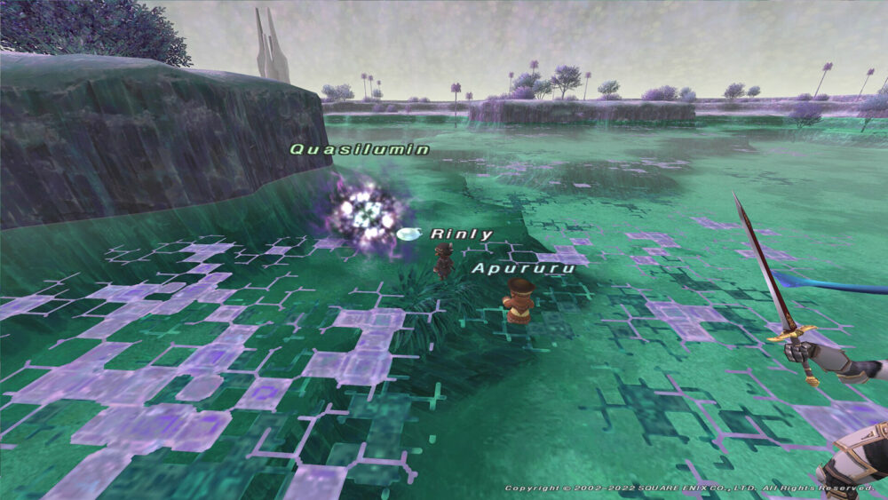
流态去分化 · 拟光体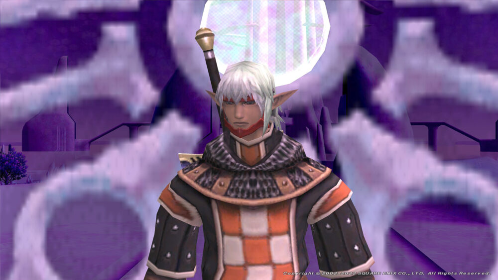
门前召唤 · 鲁夫朗斯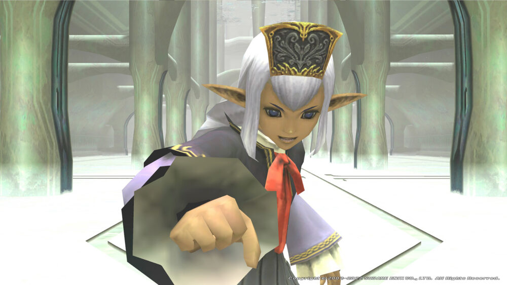
路·美特之园 · 同伴为锚与普利修直面分裂却拒绝吞没的姿态形成冷酷镜像的，是快步冲向封印的纳格莫拉达。早在普索·贾第四母水晶前，听不见塞尔·提乌斯心声的纳格莫拉达便曾惊恐自问：“莫非是因为我已经失去了‘心灵之言’？”在古都夕照之间，他企图洗净体内暗影以“重新成为完全的吉拉特人”；而在路·美特之园的漆黑石板前，他更悲愤独白道，自己本该成为“完全的存在”、成为“引导不完全之物的存在”。
为了拒绝承认自己也是一个有裂口、有局限的有限者，纳格莫拉达在轰击封印前向玩家抛出了一道二选一的逼问：你心底是否其实觉得人与世界都无所谓，只是想亲眼揭开无人知晓的真相？当玩家选择“否”时，他竟居高临下地反问：“是吗？那莫非只是你自己还没有察觉到而已？”随后径直向男神高呼：“把全部的真相告诉我吧！由我来引导那些不完全的人类吧！”
这段二选一的分支对话，以冷酷的交互规则演完了一场“对他人否定权的总体性剥夺”：在自诩全知的法庭上，他人连说“不”的权利都被诊断为虚假意识。沿着荣格 《伊昂》第四章《自性》 的警示与谢林《自由论》的脉络看去，当有限自我拒绝自身匮乏、企图直接吞并宇宙总体性以充当“无裂口的全知引导者”时，迎来的绝非升华，而是“自我膨胀”（ego-inflation）引发的心灵倾覆——普利修听见门后赤裸的“终结”却以同伴为锚拒绝跨步，而丧失“心灵之言”的纳格莫拉达却因无法忍受自身的有限裂口，妄图借男神的全知真相填满匮乏，最终在自我膨胀中反遭吞噬。
第六章 神的失乐园
俯瞰库菲姆岛与让渡决断权
踏上悬浮于云海之上的最终决战舞台“天象之锁”，《晓》的开篇并没有急着拉响弑神的号角，而是先借普利修的目光完成了一次惊心动魄的大地锚定。站在纯白神域的边缘向下俯瞰，普利修一眼认出了正下方的库菲姆岛，为瓦纳迪尔的凡间大地竟然近在咫尺而惊愕不已；紧接着真相揭晓：苏醒的黄昏男神正欲摧毁第五块母水晶，携整座古都坠向脚下的大地。
那座曾被太古文明奉为超验乐园的纯白神都，从来不曾脱离凡间大地的重力场；它的正下方就是冒险者曾无数次踏雪穿行的库菲姆荒岛，而神明追求“完全之死”的回归冲动，在物理空间上正表现为将整座古都化作砸毁现世的陨石。这一眼，把云端之上的形而上学对决稳稳拉回了护卫脚下具体大地的伦理位置。
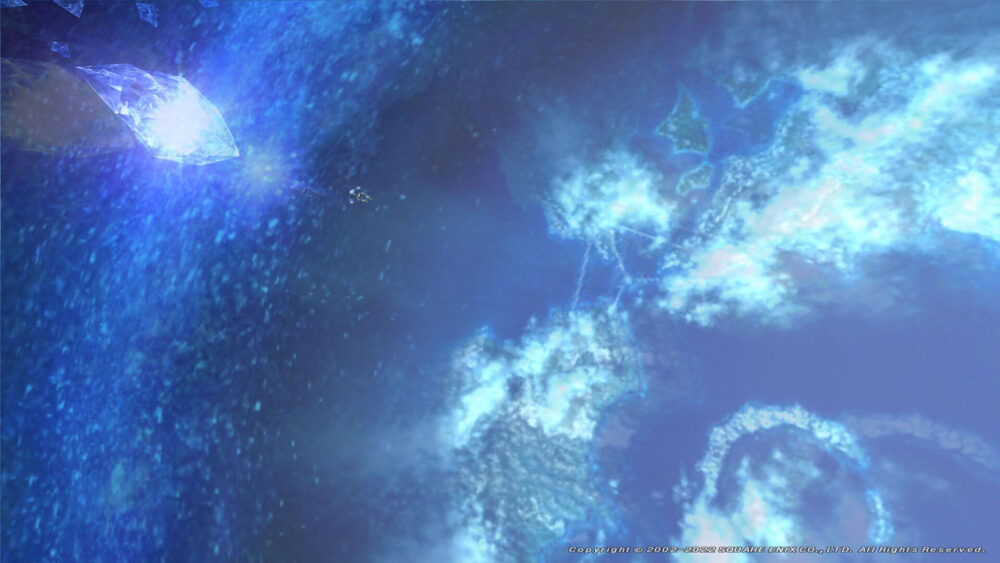
天象之锁 · 大地锚定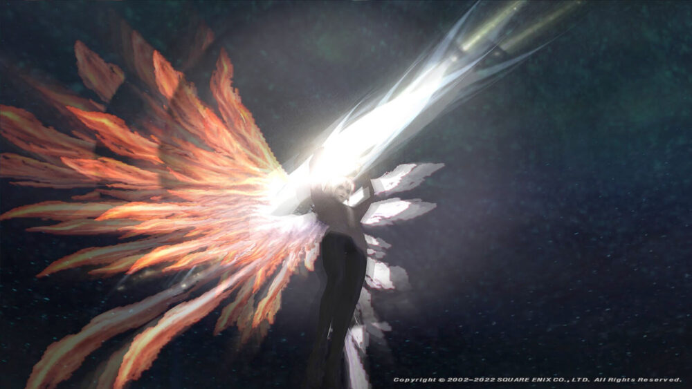
天象之锁 · 凤凰双翼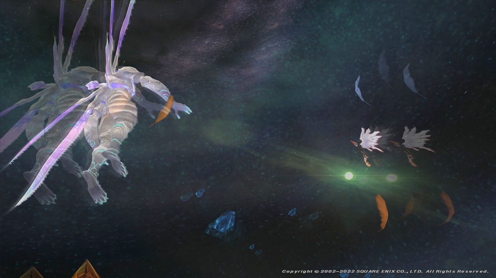
天象之锁 · 求死之神面对剧本主笔佐藤弥詠子在 官方访谈 中所称的“渴望去死的神”，并肩立于天象之锁的普利修与塞尔·提乌斯，构成了跨越万年的神代容器与现世容器之同道镜像。两人同样因体内结晶而停滞于少年少女之身，同样承受过凤凰之火的洗礼；塞尔·提乌斯在万年孤独与凤凰复生中几乎退回彻底的静默，成为悬在尘世之外的神代守望者；而普利修在普索·贾第四母水晶前对着紧闭双唇的他疾呼“别光在心里想，快说出来！”并替他唱出《石之记忆》第四节的那一刻，正是用滚烫的凡人发声与歌唱，把这位濒临石化的神代容器重新拉回了人类的话语与听觉共同体之中。
此刻在宇宙论的临界点上，同处于非神非凡之阈限位置的两人做出了极其克制的决断权让渡：正因为他们如今都已不再是通常意义上的人类，他们绝不愿协助男神迎来终结；紧接着，普利修转头面向身旁玩家——你依然是人类，是否迎来终结，应当由身为凡人的你自己来做出决断。既拒绝像第四章那样被推作替全体人类赴死的祭品，也拒绝像第五章的纳格莫拉达那样以“完全者”自居替凡人做主，这一退后一步的克制，静静卸下了替罪羊与救世主的双重铁枷。
一化为多：幽暗根据、恶与爱的秘密
随着决战落幕与《石之记忆》神歌响起，瓦纳迪尔的创世神话显露出了最深沉的肌理：女神为挽留男神性命并生出人类，从母水晶强行夺取力量致其碎为五块，并将黑暗分散封入万千凡人容器之中——“神之乐园不再，瓦纳迪尔由此诞生。”
与约翰·弥尔顿 《失乐园》 第一卷中至高主宰用来禁锢叛逆天使的惩罚性“金刚锁链”不同，CoP 题名中的“咒缚／锁链”（Chains）从来不是事后施加的刑具，而是男神存续与凡人容器自创世之初便缔结的共生羁绊。
放进比较宗教学的谱系里端详，这套创世神话更完成了一次尖锐的反诺斯替主义反转。如汉斯·约纳斯在 《诺斯替宗教》 中所揭示的，古典诺斯替神话往往把神圣光辉碎裂、跌入有限肉身视作一场必须逃离的宇宙堕落，救赎的终点则是挣脱物质容器、重返无差别的原初完满（Pleroma）。《普罗玛西亚的咒缚》却将这一救赎方向彻底颠倒：企图抽干暗影、把五族生命重新收束回纯白太一的“天上之海”与纳格莫拉达，才是真正令人窒息的监牢；女神打碎母水晶、将黑暗分散封入万千凡人容器，并非惩罚性的流放，而是为了替有限生命撑开足以呼吸的裂口。
谢林 1809 年《自由论》的形而上学体系，恰好解开了这出“一化为多”的创世之谜。在《自由论》中，谢林对两重容易混淆的概念作出了极其严密的本体论区分。其一是作为有限人格内在收缩基底的“根据”（Grund）：它是个体得以脱离浑然未分的原初“无底”（Ungrund）而独立实存的必然前提，本身绝非邪恶；没有这层幽暗的收缩基底，有限个体就会瞬间消融在无差别的太一之中，宛如天上之海里那些丧失面容的拟光思念体，既不可能拥有自由意志，也不可能保有不可被他人直接读穿的独立内心。其二则是谢林所界定的现实之“恶”（das Böse）：恶并不源于拥有幽暗基底本身，而严格发生于有限个体意志拒绝安守基底位置、妄图凌驾于普遍光明秩序之上并反过来吞并总体之时——这恰恰映出了第五章纳格莫拉达妄图以“完全者”自居、霸占全知真相而终遭反噬的命运。
更进一步，谢林在《自由论》终篇追问原初同一体为何必须经历分化（Scheidung）时写道：“因为无论在哪里，若没有先行的分离，爱便无法存在……这正是爱的秘密：它将那些各自本可以独立自存、却又无法离开彼此而存在的者联结在一起。”女神打碎单一母水晶、将黑暗流散于万千容器的创世之举，正是用幽暗的“根据”撑开了人与人之间的独立边界。至此，贯穿全篇的两条本体论主轴亦在瓦纳迪尔的创世事件里完成了最锋利的辩证反转：同一团“虚空之暗”，一旦被黄昏男神收归纯白太一，便化作弗洛伊德意义上消除一切有机张力的无机死寂；唯有被黎明女神分散锚定在万千凡人肉身之中，它才转化为谢林《自由论》中抗拒无差异吞并、撑开个体独立与爱之可能的幽暗“根据”。没有这层分化的代价，世间便只剩下天上之海“万物融为一尊单一神明”的死寂同一，而绝无凡人之间跨越隔阂的爱与羁绊。
复数战线与投石一瞬的隐秘后门
在 天象之锁终战（Dawn） 的两段实机规则里，伴随《黄昏与黎明》（Dusk and Dawn）交织对位的决战旋律，每一项机制都与叙事严密咬合：第一形态中，黄昏男神会按五大种族降下对应的长效恐吓技“冷漠、傲慢、怯懦、嫉妒与愤怒之锁链”，唯独已在路·美特之园登顶夺回本族之光的玩家方能免疫——唯有直面并承接本族的虚空，才能在终战不被锁死；待男神转入第二形态、展开物理无敌红环（Wheel of Impregnability）或魔法无敌绿环（Bastion of Twilight）并施放群体沉默与遗忘时，劈开神明绝对屏障的并非高踞云端的神谕，而是普利修一记毫无圣女包袱、极具凡人野气的招牌飞踢“无效化飞踢”（Nullifying Dropkick，参见 FFXIclopedia: Dawn）。
比红绿无敌环更冷峻的，是两名同行容器在治疗规则上的不对称：普利修与塞尔·提乌斯虽同立于玩家战线一侧，但普利修不仅可接受玩家治疗，在陷入“战斗不能”后亦可借白魔法“复活术”重返战线（单场实战中她是否实际倒下并由玩家拉起属或然互动，并非必触发过场，参见 FFXI 用语辞典：晓）；而塞尔·提乌斯却无法接受玩家任何治疗，且一旦倒下战斗便即刻失败，只能靠自身凤凰复元死撑全局。这道系统规则瞬间立住了两具容器的命运分野——塞尔·提乌斯仍是那个无法被凡人直接触碰的神代孤守者，而普利修早已站进了允许同伴倒下、又由同伴伸手扶起的凡人脆弱战线。正如阿伦特在 《人的境况》第五章第 33–34 节 中所写，复数凡人在不可逆的过往创痛与不可预测的未来深渊之间，唯靠“宽恕”解救不可逆性（如塔布纳基亚地下壕的纯白发卡与长老自省）、靠“承诺”在未知黑暗中立起彼此可托付的孤岛（如利维内浮空岛上普利修与乌尔米娅面对真龙立下的誓言），天象之锁的并肩破盾，正是这两项尘世能力在实机规则与叙事行动上的共同兑现。
云海散开，天际流光四溢。男神的黑暗与水晶之光交汇激荡，凝结出一块漆黑的魔晶石；普利修奋力将黑石投向男神，玩家体内承载的五处母晶辉光随之在天际释放，企图吞没世界的求死之神终于被击退。保卫瓦纳迪尔的漫长战役，仿佛就此画上了圆满的句号。
然而，在公共战场上击退外在的灭世神明，并不等于主体内部无意识愿望的彻底出清。就在普利修奋力将黑石投向男神的那一瞬间，她尚未察觉自己胸口矿石的异变，依然以为漫长无尽的不老岁月还将继续压在肩头。于是，被压抑的求死暗流就在胜利的同一秒钟里，悄悄替她留出了一道隐秘的后门——拉康在《第十一期研讨班》中所剖析的、支撑受困主体忍受现实僵局的最后一层“基本幻想”担保。真正的破晓，还必须等待吕费斯草地迎风悬崖上的那场面对面剖白。
第七章 迎风悬崖上的胸口剧痛
在废墟前翻开最后一张底牌
终局后日谈《解开咒缚之时》的尾声，将镜头带回了吕费斯草地可以隔海远眺塔布纳基亚旧都残垣的高地——青草之丘（参见 《解开咒缚之时》日文剧本转录 与 实机记录）。
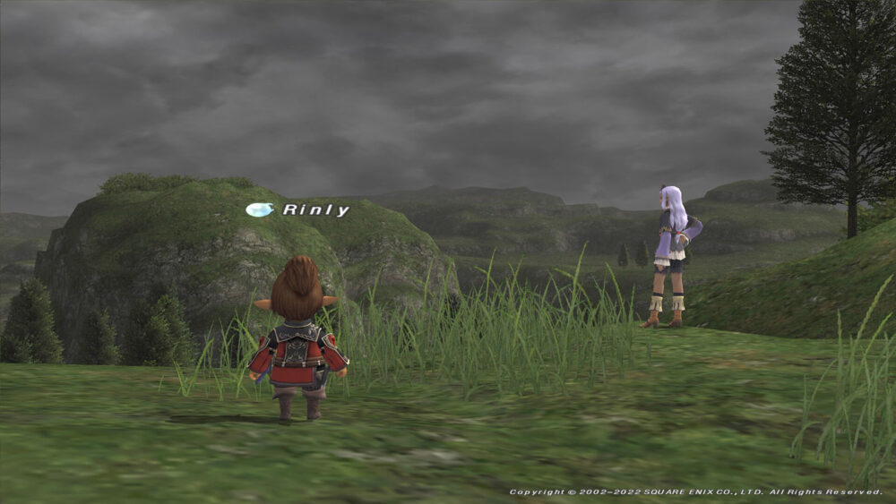
青草之丘 · 穿越幻想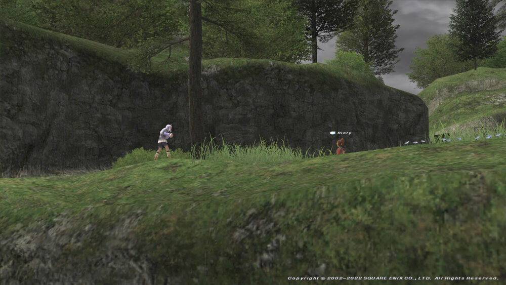
时间展望重开 · 具身位移海风掠过旷野，普利修先问身旁的玩家从前是否来过这里，随后抬眼望向远方那座残破的故都，将其同时指认为“我出生的城”与“‘世界的终结’出生的城”。这句平静的双重指认，遥遥改写了第二章地下壕里的归罪风暴：当年德斯帕谢尔长老在集体阴影的恐慌中，强行把她的出生指认为亡国与龙灾的“一切元凶”；而此刻外在的迫害指控与灭世神明均已退潮，普利修却主动将故都废墟与自己身上的“终结”摆上了台面。
迎着长风，她向一路生死与共的沉默同伴，交出了贯穿全剧暗线的第一人称剖白——也亲口揭开了天象之锁投石一瞬埋下的悬念。她坦承，自己过去一直想着“世界的终结”：因为确信自己会永远活下去，便盘算着只要一直活下去，总有一天能见到世界终结并迎来自身生命的终点。直到在古都门前听见男神低语的那一瞬，她才骇然认出，那个一直在心底等待着世界终结的人，不是别人，正是她自己。甚至在天象之锁决战末尾将黑色魔晶石投向男神时，她心底依然夹杂着一丝隐秘的私心——希望黑石回到母水晶，使遥远的未来仍可能再次出现“终结者”。
只要这股被压抑的求死愿望仍躲在胡桃木门的玩笑、大公宫的舍身救世或投石一瞬的隐秘保留背后，创伤性的自我分裂便永无尽头。在天象之锁投出黑石的时刻，那句“希望未来仍有终结者”的念头之所以还能充当她逃避无尽生命的“基本幻想”担保，全在于它被反锁在无人知晓的暗室里，使她得以在不损害“救世同伴”公开形象的前提下，继续在心底攥紧那张终结保证书。而在吕费斯草地的悬崖上，她既没有替二十年前的兽人灭国背黑锅，也没有继续躲在假自体铠甲背后，而是亲手打破克尔凯郭尔在《焦虑的概念》中所剖析的“幽闭”（Indesluttethed），顶着“自由的眩晕”将这枚最羞耻的幻想底牌坦诚摊开在最重要的同伴面前；顺着这条焦虑谱系步入拉康《第十一期研讨班》第二十讲的视野，这一声毫不遮蔽的坦白，正是主体亲手拆毁并“穿越基本幻想”（la traversée du fantasme）的惊险一跃——她自愿将赤裸的自己，暴露在“可能因此被眼前同伴厌弃”的伦理风险之中。
点头、摇头与那声刺破矿石的剧痛
正因为这场剖白押上了整段生死情谊，普利修在说完投石私心后，带着前所未有的忐忑发出了试探：被你讨厌，莫非就是我所受的惩罚吗？你也这么认为吗？
游戏在此给出了全篇最克制、也最具重量的一次交互——玩家只能无声地选择【点头】或【摇头】。无论玩家选择点头（认可这是应得惩罚）还是摇头（否定），普利修作出简短回应之后，两条分支都不可避免地坠入同一声痛呼——“我的胸口好疼啊”（「胸がいてぇんだ」）。
此处也恰是人物精神分析必须诚实跨过学派边界的节点：拉康的结构主义视野足以诊出普利修为何必须亲手砸碎“终结者”的基本幻想，却对任何自足完整的“真自体”保持根本怀疑；要理解她在摊牌之后何以在同伴静立面前重新尝到胸口搏动的真实感，便须跨出纯粹的能指链，转入温尼科特的具身客体关系视野。温尼科特在 《客体的使用》 与 《独处的能力》 中阐述过主体跨越主观投射、触及真实他者的关键序列：主体在关系考验中向客体发起足以摧毁信任的冲击，而客体在承受冲击之后“不加报复地幸存”（survives without retaliation），稳稳地“在场却不提强加的要求”。青草之丘上唯有海风掠过草坡的寂静。当普利修把“我甚至在投出黑石时仍盼望未来出现毁灭世界的终结者”这桩最黑暗的私心当面砸向玩家时，她正是在向这段关系发起赌上一切的摧毁性检验。然而，无论是无声点头还是摇头，那位“一言不发、只是那样站在那里”的玩家都没有拔剑相向，没有转身离去，也没有像纳格莫拉达那样居高临下地替她宣判，而是静静地、不加报复地幸存了起来。
正是在同伴无报复静立的这一瞬，弗洛伊德在《抑制、症状与焦虑》附录 C《焦虑、疼痛与哀悼》中的洞见，映出了那声“我的胸口好疼啊”背后的真相。弗洛伊德指出，成熟个体在人际关系中最深切的危机指向“丧失所爱客体的爱”；当主体对一位极其珍视的外部同伴倾注了毫无保留的爱欲牵挂，却面临不可掌控的分离边界与失落风险时，那股持续涌向对方却无法靠全能掌控即时满足的情感能量，便会在躯体与心灵边界上激起剧烈的“分离之痛”（Schmerz）。
过去二十年里，胸口那块冰冷的魔晶石替她锁死了生理时间，使她在遭旁人辱骂、刀砍剑刺时都能躲在看护者假自体与无机硬壳后毫无痛觉；唯有此刻，当她亲口穿越了终结幻想、卸下铁甲，真切地害怕“被你讨厌”时，她才从无机石头的麻木退行中苏醒，第一次尝到了因深爱独立他者而撕裂胸膛的凡人之痛。
从“心与心合一”到“变得和你一样”
胸口的剧痛尚未平息，普利修紧接着在惊惶中追问起眼前的沉默：她直言自己感到害怕、不安，对着玩家问出“你已经变回普通的凡人了吧？可为什么还要对我关闭内心呢？”，并在悲伤、辛苦、讨厌这几个词之间急促摸索，追问这份陌生的痛感究竟指向谁。
五处母晶辉光在决战末尾释放之后，玩家已重归普通的凡人；按普利修维持了二十年的经验，普通凡人的内心本该对她完全透明。然而，网络角色扮演游戏赋予玩家化身的“沉默主角”惯例，此刻竟化作了一道刺穿读心形而上学的哲学事件。诚如列维纳斯在《总体与无限》中所捍卫的他者面容之不可化约性，他人的心意从来不是一部预先写好、等待靠感应收编为“同一”的透明文本；真正的伦理相遇与体认，恰恰诞生于彼此不透明的沉默间距之间。贯穿全篇的听觉暗线也在此刻收拢：从海狮巢窟栈桥上乌尔米娅“唱属于你的歌”，到普索·贾逼问塞尔·提乌斯开口发声，直至此刻在海风中直面沉默的玩家，普利修终于彻底走出了“心灵之言”的暴力透明，步入了需要在沉默与言说之间彼此倾听的凡人声场。
正是在这片读不出对方心思的焦灼沉默里，普利修接连做出的两次猜想修正，在短短数语间走完了从太古大洋感向有限个体并立的跨越：
为了解释为何听不见玩家的心声，她的第一重猜想依然沿袭着吉拉特神话与天上之海的旧范式——“你和我是同样的心情啊。因为心与心合在一起，所以我才读不出你的心”。话音刚落，她旋即推翻了这个解释，跃迁出了第二重猜想——“不对，不是读不出来，莫非是因为我自己也变得和你一样了……？”紧接着，在这道预感的牵引下，她蓦然发觉自己胸口嵌了二十年的魔晶石已经消失不见（猜测其已溶去），自己终于重新取回了“人之为人的证明、那份虚空之暗”（「人が人である証、虚ろなる闇」）！
这短短两句话的更替，悄然翻覆了整部创世神话的重心。“变得和你一样”不再意味着天上之海那种抹去边界的合二为一，而是意味着矿石消溶、读心特权丧失之后，两个同样有限、同样隔着不透明肉身界膜的凡人主体，在分离的距离里获得了完全平等的实存位置。太古吉拉特王曾把库鲁乌人失去“心灵之言”视作必须监控清洗的堕落；而普利修在吕费斯草地的剧痛中领悟到，正是这份使人不再能直接看穿彼此的“虚空之暗”，构成了谢林所说的有限人格之幽暗“根据”，并将那块堵死呼吸的死寂矿石，重新化开为容许凡人向死而生、在分离中去爱的有限裂口。
发自整个身体正中央的道谢
独白的尾声，普利修拭去眼泪、仰望天空，感叹人类真是奇妙，将“痛苦与高兴”“辛苦与幸福”两极张力同时并置在一起。随后，她缓缓将手掌按在胸口，说出了全篇最滚烫的一句话：
“所以现在我才能说出来。发自内心、发自整个身体的正中央。谢谢你……我能够活下去啊。用不着再等待什么终结，和大家怀着同样的心情……活下去。” 「だから言えるんだ。心から、身体の真ん中から。ありがとう……俺、生きていけるよ。終わりなんか待たずに、みんなと同じ気持ちで……生きていける」
温尼科特在《真自体与假自体中的自我扭曲》中这样描述“真自体”的身体根源：“真自体源自身体组织的鲜活感与身体机能的运作，包括心脏的搏动与呼吸……唯有真自体能够感到真实……她终于感到了真实，因此她现在想要活下去了。”那个曾经嵌着冰冷矿石、将她锁在时间之外的“身体正中央”，在经历了“胸口好疼”的心脏搏动与剧痛之后，终于化作了真自体的发声中心。
话音落下，她转身迎着吕费斯草地的长风迈步奔跑离去。昔日胡桃木门内的幽闭与胸口结晶，将勒温所说的心理位移与未来“时间展望”双双锁死；此刻旷野上的奔跑，宣告着具身位移与向未来敞开的生活空间彻底苏醒。诚如主笔佐藤弥詠子与过场导演斋藤由嗣在 官方访谈 中所回顾的那样，紧随悬崖道别而来的结局群像过场——制作组曾无数次工作至深夜、通过录像带逐帧核校人物动作，例如特意校准罪人猎手希卡莉·Z 放下兵刃后低头端详自己双手的一瞬，让那双曾奉律令追猎罪人、又曾在古都门前渴求“完全之法”的手回归对有限自我的审视——正是为了向历经漫长险途的玩家致谢，并展现那片唯有借由众人共同栖居方才成真的辽阔世界。随群像画面缓缓响起的，正是脱胎于《石之记忆》后半段旋律的完整人声片尾曲《遥远的世界》（Distant Worlds，参见 FFXIclopedia: Dawn）——从第二章海狮巢窟栈桥上乌尔米娅许诺“去唱属于你的歌”，到第四章米萨雷奥海岸她含泪拒交召死之歌，这首不再用来召唤终结、而是在凡人声带与海风中传唱的旋律，终于替全篇的听觉共同体落下了绵长的余音。
终章 解开咒缚以后
听见司祭课业便溜走的日常
在真正踏上青草之丘、迎来《解开咒缚之时》的终场之前，冒险者须先依次奔赴巴斯托克大工房、比比奇湾、南桑多利亚与乌勒格兰德雪原、姆哈拉及莫瓦波罗斯旧址，分别向踏上归乡路的典膳、重聚后四处漂泊的切布基三兄妹、背负旧日名号的鲁夫朗斯、回归日常巡守的希卡莉姐妹与重返地底族人的贾博斯逐一道别（参见 BG-Wiki: PM 8-4）——第五章路·美特之园门前那六幅“即时圆满”的幻象帷幕，至此尽数落回了各自散落人间、粗糙而未尽的凡人余生。若将目光略微拨回踏上青草之丘前的地下壕灯火，后日谈在三层岩穴里留下了一段极轻快、却不可或缺的日常插曲。
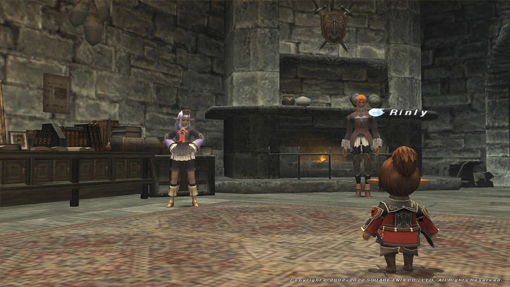
终章日常 · 地下壕灯火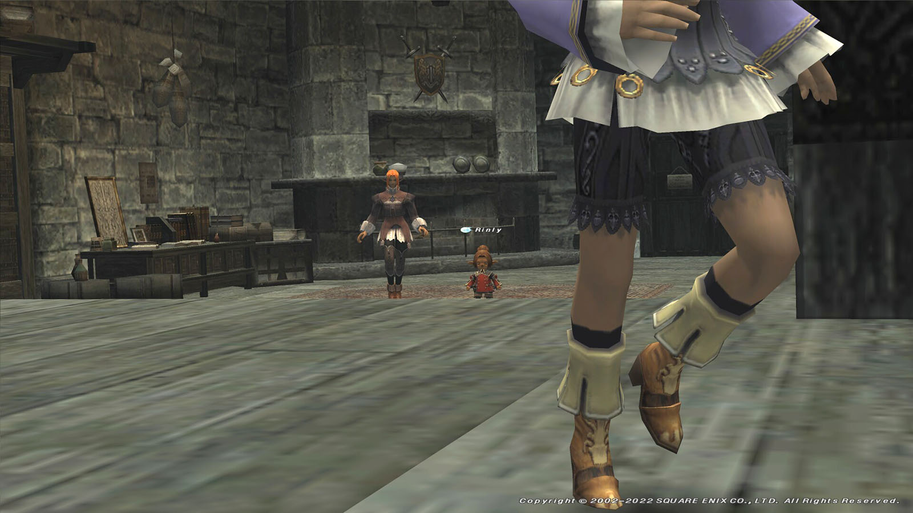
终章日常 · 自发姿态在三层岩穴的灯火间，普利修与乌尔米娅谈起朱诺方面将提供更具自治余地的援助，乌尔米娅则转述祖父德斯帕谢尔的心愿——一步步清除周遭魔物、开垦荒芜农地、复兴村落并终有一日重返故都塔布纳基亚。这一锄一剑的漫长重建筹划，正面回应并修正了红面具鲁夫朗斯在古都门前听见的“凭一己之力令毁灭之城重现辉煌”的全能幻象；也在完成哀悼、告别强迫戒备与阿伦特“宽恕解救不可逆性”的尘世伦理中，让被二十年亡国创痛锁死的流亡聚落真正接受故都已毁的事实，重新面向可耕作的时间展开。紧接着，当乌尔米娅转头督促普利修好好学习、承担起司祭的职责时，刚才还在慷慨谈论自治条款的普利修顿时发出一声惊叫，旋即借口自己要去“修行”而溜之大吉。
荣格在《伊昂》中再三警告，主体在经历与宏大无意识原型的正面碰撞后，最危险的陷阱在于自我将自身等同于刚刚接触过的神圣原型，膨胀为一尊失去凡人烟火气的“玛那人格”或救世圣女。经历过天象之锁弑神之战的普利修，回到塔布纳基亚地下壕后非但没有端起高阶司祭或圣女的庄严架子，反而在听见枯燥课业的瞬间原形毕露地惊叫逃跑。这份拒绝被神圣职务规训的野气与温尼科特所说的“自发姿态”，印证着真正的个体化从来不是把活人提纯为冰冷圣像，而是让带着棱角、依然会在日常里插科打诨的有限个体，重新稳稳落回需要众人日复一日织补的人间关系网中。
大理石桥的三德之戒
走出地下壕，回到朱诺上层的大理石桥，米尔德里翁（艾珊塔尔）为这场漫长旅途落下了最冷静的一句提醒：母水晶周遭的虚空尚未尽散，此次能够不出牺牲便将世界与人一并救下，仰赖的是众人的扶持与信任，这样的道路并非随时都有现成保证（参见 大理石桥事件日文转录）。这句毫不粉饰的余波提醒，恰与阿伦特《人的境况》第 34 节关于“承诺回应不可预测性”的洞见遥相呼应：凡人世界永远没有一劳永逸的终极担保，能够抵御未来不确定深渊的，唯有在一次次具体危机中由复数同伴重新缔结并履行的尘世之约。
随后，由祖贝尔转交给玩家的，是三枚只能择一佩戴的孤品纪念指环——拉贾斯之戒（Rajas Ring）、萨埵之戒（Sattva Ring）与塔玛斯之戒（Tamas Ring）。从词汇与概念比较来看，这三枚戒指的名称恰好对应古印度数论派 《数论颂》第 12–13 颂 中构成原质的“三德”：拉贾斯象征激越跃动的行动之劲，萨埵象征澄明朗照的喜乐之光，塔玛斯象征沉重拘束的幽暗之影。
放回全篇的脉络里再看，这三枚只能择一而戴的指环便不再只是一份通关奖赏，而是整部《普罗玛西亚的咒缚》留给玩家的最后一枚荣格式“活象征”——没有任何单一的凡人容器能够独占纯粹的澄明之光（萨埵），也没有任何活人可以借洗礼或净化彻底免除沉重的幽暗之影（塔玛斯），更无人能凭一己之跃动（拉贾斯）独自背负整个世界的重量。萨埵的光明秩序与塔玛斯的幽暗根据，正如谢林《自由论》中缺一不可的双极，唯有在有限个体各自承领一隅、并在复数同伴的并肩协作中彼此补足时，现世的生命才得以摆脱死寂的同一而真实运转。
在玫瑰色晨光中呼吸
回到最初的起点，再看那条从荣格童年斜坡顽石、阁楼黑石延伸至瓦纳迪尔的“退回石头的冲动”，整趟旅途的炼金转化至此已彻底闭合。
故事开篇时，“石”是受苦生命不堪重负时渴望退回的无机静止，是黄昏男神企图收回五块母水晶以达成的“完全之死”，也是嵌在普利修胸膛里、用不老不死堵住凡人呼吸的创伤矿石。穿过漫长而带着重力阻力的尘世险途，借由同伴在天井、云端与甲板上的死战托举，并拒绝在天上之海的苍白流体中融化为一尊单一神明之后，那块凝固了二十年的胸中矿石，终于在吕费斯草地的海风与一声“我的胸口好疼啊”里消溶殆尽。
那个混沌未分的“原初乐园”在创世神歌中碎裂成了五块母水晶与万千凡人容器。瓦纳迪尔从未许诺免除噩梦、分离与老去，塔布纳基亚的垦荒重建也才刚刚起步；但正因为体内保有那份作为人之证明的幽暗根据，身旁站着仍须在沉默与言说间以一生去回应的同行者，挣脱了深海吞没的凡人，才得以如弗洛伊德引述的诗行所言——在上方玫瑰色的晨光中，真切地呼吸，真切地活下去。
注释（版本界碑、关键任务编号、双语索引与方法论防火墙）
- 版本界碑与机制更新：2010 年 6 月 22 日官方解除普罗米翁及多处 CoP 主线区域的强制等级上限（原三大母岩普罗米翁上限 Lv.30、福缪纳水道与利维内岩石群站点 A01 上限 Lv.40、沉没礼拜堂／利维内站点 B01／普罗米翁-瓦兹尔上限 Lv.50、普索·贾分区域设 Lv.40/50/60 上限、PM 6-4 飞艇战舰连战上限 Lv.60 及全部 CoP 任务战场），详见 PlayOnline 官方更新日志。
- 主线任务对照索引：序幕与三大母岩对应 PM 1-2《楼閣の下に》（Below the Arks）及 PM 1-3《母なる石》（The Mothercrystals）；塔布纳基亚地下壕与胡桃木门对应 PM 2-1《西への誘い》（An Invitation West）、PM 2-2《忘却の町》（The Lost City）、PM 2-3《隔たれし信仰》（Distant Beliefs）、PM 2-4《とこしえに響く歌》（An Eternal Melody）与 PM 2-5《誓いの雄叫び》（Ancient Vows，利维内站点 A01）；第三章阿托瓦地沟帕拉达莫之丘攀山与修复记忆之镜对应 PM 3-3《ふたつの道》（The Road Forks）温达斯线；第四章《迷途之子的摇篮》（The Cradles of Children Lost）对应 PM 4-1《よりしろ》（Sheltering Doubt，重返地下壕解锁拍卖行、快递与特产店）、PM 4-2《猛き者たちよ》（The Savage，利维内站点 B01）、PM 4-3《礼拝の意味》（The Secrets of Worship，沉没礼拜堂）与 PM 4-4《そしりを受けつつも》（Slanderous Utterings，归罪风暴与海狮巢窟栈桥道别）；第五章对应 PM 5-1《鍔音やむことなく》（The Enduring Tumult of War）、PM 5-2《願わくば闇よ》（Desires of Emptiness，普罗米翁-瓦兹尔）与 PM 5-3《みっつの道》（Three Paths：典膳线 The Pursuit of Paradise、乌尔米娅线 Where Messengers Gather、鲁夫朗斯线 Past Sins）；第六章大公宫密谈、第五首歌与飞艇三段连战对应 PM 6-1《歌うは誰がため》（For Whom the Verse is Sung）、PM 6-2《ゐぬる場所》（A Place to Return）、PM 6-3《望むはあらゆる答え》（More Questions Than Answers）与 PM 6-4《畏れよ、我を》（One to be Feared）；第七章凤凰之火与劫后重逢见 PM 7-1《鎖と絆》（Chains and Bonds）及 PM 7-5《武士道とは》（The Warrior’s Path，飞空艇劫船对决与坠入阿尔·塔伊尤）；第八章古都天上之海、路·美特之园与天象之锁决战对应 PM 8-1《古代の園》（Garden of Antiquity）、PM 8-2《選ばれし死》（A Fate Decided）、PM 8-3《天使たちの抗い》（When Angels Fall）与 PM 8-4《暁》（Dawn）；吕费斯草地悬崖告白与大理石桥三德之戒见本体后日谈《呪縛ほどけるとき》（The Chains Fall Free）。
- 核心日英原文核对：普利修自我称谓「俺は忌むべき子」（英：the abhorrent one）；体内暗影「虚ろ」（英：the Emptiness）；心灵感应「心の言葉」；门前低语「……終わりを……」；悬崖痛呼「胸がいてぇんだ」；重获凡人证明「人が人である証、虚ろなる闇」；发自身体正中央的道谢「だから言えるんだ。心から、身体の真ん中から。ありがとう……俺、生きていけるよ。終わりなんか待たずに、みんなと同じ気持ちで……生きていける」。
- 温尼科特方法论防火墙（Methodology Firewall）：本文第四章及全文凡援引唐纳德·温尼科特（D. W. Winnicott）《真自体与假自体中的自我扭曲》（1960）中关于看护者假自体“结构性防御自毁”之论述，均严格限定于客体关系精神分析的元心理学理论框架，旨在阐释虚构叙事中假自体为避免真自体遭到外力剥削与湮灭而采取的极端防御结构，绝不等同于现实临床心理评估、医学诊断或现实行为归因。
参考文献
一、游戏本体剧本、官方访谈与版本记录
- Square Enix PlayOnline: FINAL FANTASY XI プロマシアの呪縛 官方专题档案（官方专题档案与首屏题图来源；全站 24 幅 16:9 实机流程截图采自 白タルの散歩道 CoP 实机流程档案 并全部本地化存储）.
- FF11 用语辞典：《プロマシアミッション》（含伊吕波歌命名全表与历史更新考证）.
- Square Enix. Final Fantasy XI: Chains of Promathia (Version Update, June 22, 2010 — Level Cap Removal). PlayOnline Official Archive.
- Square Enix, WE ARE VANA’DIEL. “WE DISCUSS VANA’DIEL #23: Yaeko Sato & Yoshitsugu Saito.” Official Interview.
- Square Enix. Final Fantasy XI: Chains of Promathia Original Soundtrack (SQEX-10041, composed by Naoshi Mizuta et al., 2004). Square Enix Music Official Lineup.
- Magic Happy 日文剧本实机转录集（PM 5-2、PM 6-3、PM 7-1、PM 8-2、PM 8-3、PM 8-4、《解开咒缚之时》、大理石桥指环）：PM 5-2 / PM 6-3 / PM 7-1 / PM 8-2 / PM 8-3 / PM 8-4 / 《解开咒缚之时》 / 三德之戒.
- FFXIclopedia & Final Fantasy Wiki 北美英语剧本与机制档案：BG-Wiki: Promathia Mission 8-4 (Dawn) / Below the Arks / The Mothercrystals / Distant Beliefs / An Eternal Melody / Ancient Vows / The Road Forks / BG-Wiki: Parradamo Tor / Sheltering Doubt / Slanderous Utterings / The Savage / The Enduring Tumult of War / Desires of Emptiness / Three Paths / Where Messengers Gather / More Questions Than Answers / A Fate Decided / One to be Feared / Garden of Antiquity / When Angels Fall / Dawn / Memoro de la Ŝtono / BG-Wiki: Bestiary (Al'Taieu Ecosystem) / Aern / BG-Wiki: Ghrah / Yovra / Dynamis / Unforgiven / Aragoneu / BG-Wiki: History of FFXI (2006) / BG-Wiki: History of FFXI (2014) / Dynamis Plot Details.
二、哲学、精神分析与理论文献（按作者姓氏字母序）
- Arendt, Hannah. The Human Condition (2nd ed.), Ch. V §§33–34 (“Irreversibility and the Power to Forgive”; “Unpredictability and the Power of Promise”, p. 236ff.). Chicago: University of Chicago Press, 1998. Archive PDF.
- Augustine of Hippo. The City of God, Books XIII–XIV. New Advent.
- Freud, Sigmund. Beyond the Pleasure Principle (1920), trans. James Strachey. New York: Norton, 1961. Archive PDF.
- Freud, Sigmund. “The Economic Problem of Masochism” (1924). PDF.
- Freud, Sigmund. Inhibitions, Symptoms and Anxiety (1926), SE 20. PDF.
- Freud, Sigmund. Civilization and Its Discontents (1930). Electronic Edition PDF.
- Girard, René. The Scapegoat, trans. Yvonne Freccero. Baltimore: Johns Hopkins University Press, 1986. Johns Hopkins University Press.
- Īśvarakṛṣṇa. Sāṃkhyakārikā, vv. 12–13. Yoga Sutra Study.
- Jonas, Hans. The Gnostic Religion: The Message of the Alien God and the Beginnings of Christianity. Boston: Beacon Press, 1958. Bard College Archive PDF.
- Jung, C. G. Psychologische Typen (1921). Project Gutenberg.
- Jung, C. G. Aion: Researches into the Phenomenology of the Self, Ch. 2 (“The Shadow”) & Ch. 4 (“The Self”). Ch. 2 / Ch. 4.
- Jung, C. G. Memories, Dreams, Reflections (1961). PDF.
- Jung, C. G. Psychology and Alchemy, Collected Works Vol. 12, trans. R. F. C. Hull. Princeton: Princeton University Press, 1968. Collected Works Vol. 12 PDF.
- Jung, C. G. On the Nature of the Psyche (1947/1954), Collected Works Vol. 8, trans. R. F. C. Hull. Princeton: Princeton University Press, 1969. Internet Archive.
- Kierkegaard, Søren. The Concept of Anxiety (1844), trans. Reidar Thomte. Princeton: Princeton University Press, 1980. Cambridge Core Overview.
- Kierkegaard, Søren. The Sickness Unto Death (1849), trans. Howard V. Hong & Edna H. Hong. Princeton: Princeton University Press, 1980. Internet Archive.
- Lacan, Jacques. Anxiety: The Seminar of Jacques Lacan, Book X (1962–1963), ed. Jacques-Alain Miller, trans. A. R. Price. Cambridge: Polity Press, 2014. Book Review & Bibliographic Reference / Seminar X Analysis.
- Lacan, Jacques. The Four Fundamental Concepts of Psycho-Analysis (Seminar XI), trans. Alan Sheridan. New York: Norton, 1978. PDF.
- Lévinas, Emmanuel. Totality and Infinity: An Essay on Exteriority (1961), trans. Alphonso Lingis. Pittsburgh: Duquesne University Press, 1969. Internet Archive.
- Lewin, Kurt. Principles of Topological Psychology (1936). Archive PDF.
- Milton, John. Paradise Lost. PDF.
- Schelling, F. W. J. Philosophical Investigations into the Essence of Human Freedom (1809), trans. Jeff Love & Johannes Schmidt. Albany: SUNY Press, 2006. PDF.
- Winnicott, D. W. “The Capacity to Be Alone” (1958). UPenn PDF.
- Winnicott, D. W. “Ego Distortion in Terms of True and False Self” (1960). UPenn PDF.
- Winnicott, D. W. “The Use of an Object” (1969). UPenn PDF.